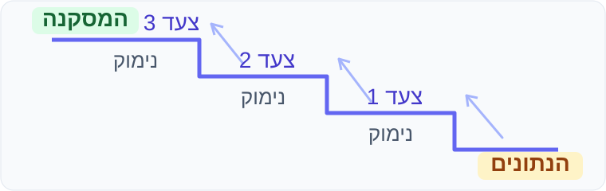

1 לוגיקה: הכללים לבניית משפטים ולהסקת מסקנות
איך מחברים כמה משפטים לטענה אחת ברורה? ומה מותר להסיק מן המידע שיש לנו? בפרק הזה נכיר את כללי הלוגיקה שעוזרים לענות על השאלות האלה. נתחיל ממילים מוכרות — ״לא״, ״וגם״, ״או״ ו״אם… אז…״ — ונלמד להשתמש בהן במדויק.
בדרך ניעזר במתגים ובמנורות, נבדוק את הטענות של הרובוט של המזכירות ונפתור חידות על אבירים ונוכלים. בכל פעילות נחזור לאותה מטרה: להבין מה נאמר, ואיזו מסקנה באמת נובעת מכך.
1.1 על מה הקורס הזה?
למתמטיקה יש שפה משלה. כדי להשתמש בשפה, צריך להכיר גם אוצר מילים וגם כללים לחיבור המילים למשפטים. היכרות עם מילים רבות היא התחלה טובה, אבל צריך גם לדעת איך לחבר אותן למשפטים ברורים.
כך גם במתמטיקה. חלק מאוצר המילים כבר מוכר לנו: למשל ״מספר״, ״שווה״ ו״גדול מ־״. בקורס הזה נוסיף מושגים חדשים, כמו קבוצה, יחס ופונקציה; נלמד מה כל אחד מהם אומר כשנגיע אליו. בקורסים אחרים אוצר המילים ימשיך לגדול.
הלוגיקה עוסקת בכללים שבהם משתמשים עם אוצר המילים הזה. היא מלמדת איך לחבר משפטים, איך לשלול אותם, ואיך לבדוק אם המידע שקיבלנו מצדיק מסקנה חדשה. למשל, ״המספר גדול מ־5 וגם קטן מ־10״ דורש ששני הדברים יתקיימו. אם מחליפים את ״וגם״ ב״או״, מקבלים דרישה אחרת. המילים הקטנות האלה משנות את מה שהמשפט אומר.
חשוב לזכור — אוצר המילים גדל; בכל פעם משתמשים בכללי הלוגיקה.
המושגים אומרים על מה מדברים. כללי הלוגיקה עוזרים לחבר את הטענות ולבדוק מה נובע מהן.
לא צריך להכיר מראש את כל המושגים שנלמד בקורס. את כללי החיבור וההסקה אפשר להתחיל לתרגל עם משפטים פשוטים מחיי היומיום, ובהמשך להשתמש בהם גם כשמדברים על מושגים חדשים.
הכללים האלה שימושיים גם במחשבים ובאתרים שאנחנו פוגשים:
- תנאי בתוכנה. שורת קוד כמו
if battery > 20 and wifi_onמשתמשת ב״וגם״ בדיוק במובן שנלמד כאן. - סינון באתר קניות. ״מחיר עד 100 ₪ וגם (צבע שחור או כחול)״ הוא תנאי שמורכב מכמה תנאים פשוטים. האתר מציג רק את המוצרים שעומדים בתנאי הזה.
- חיפוש במאגרי מידע. כל חיפוש ״מתקדם״ הוא צירוף של תנאים עם ״וגם״, ״או״ ו״לא״.
- מעגלים לוגיים במחשבים. בפרק נשתמש במודל של מתגים ומנורות כדי להמחיש כיצד מחשבים ערך אמת מתוך כמה ערכי קלט.
חשוב לזכור.
בקורס הזה לומדים לקרוא ולכתוב מתמטיקה. כמו בכל שפה, בהתחלה מתרגמים כל מילה בזהירות, ואחר כך זה נעשה טבעי.
1.2 האם המסקנה נובעת מההנחות?
1.2.1 הנחות, מסקנה וטיעון
נניח שאומרים לנו: ״כל הסטודנטים בקורס קיבלו הודעה. דנה סטודנטית בקורס. לכן דנה קיבלה הודעה״. מה עשינו כאן? התחלנו משני פרטי מידע, ובעזרתם הגענו לטענה נוספת.
הגדרה 1.2.1 — המילים של טיעון: מאיפה מתחילים ולאן מגיעים?
- טענה היא אמירה שאפשר לקבוע לגביה אם היא נכונה או שגויה. למשל: ״דנה קיבלה הודעה״. אם דנה לא קיבלה הודעה, זו טענה שגויה — אבל היא עדיין טענה. עצם השימוש במילה ״טענה״ אינו אומר שהאמירה נכונה. בהמשך נקרא למשפט כזה גם ״פסוק״.
- הנחות הן הטענות שמקבלים כנקודת מוצא לבדיקה. בדוגמה: ״כל הסטודנטים בקורס קיבלו הודעה״ ו״דנה סטודנטית בקורס״.
- מסקנה היא הטענה שמבקשים להצדיק בעזרת ההנחות. בדוגמה: ״דנה קיבלה הודעה״.
- טיעון הוא ההנחות יחד עם המסקנה שמציעים להסיק מהן. המילה ״לכן״ מסמנת לעיתים קרובות את המעבר למסקנה.
כשאומרים שהמסקנה נובעת מההנחות, מתכוונים: אם ההנחות נכונות, המסקנה חייבת להיות נכונה גם היא. לטיעון כזה קוראים טיעון תקף.
כדי לבדוק תקפות, שואלים מה יקרה אם נקבל את ההנחות. זו שאלה נפרדת מהשאלה אם ההנחות אכן נכונות בעולם. הדוגמה הבאה מפרידה בכוונה בין שתי השאלות.
דוגמה 1.2.2 — מיצי עפה.
- הנחה: כל החתולים יודעים לעוף.
- הנחה: מיצי היא חתולה.
- מסקנה: מיצי יודעת לעוף.
האם המסקנה נובעת מן ההנחות? הסבירו.
הצגת תשובה והסבר
ההנחה הראשונה אינה נכונה בעולם. אבל אם מניחים שכל החתולים יודעים לעוף ושמיצי חתולה, נובע שמיצי יודעת לעוף. לכן הטיעון תקף, גם כשההנחה שממנה התחיל שגויה.
דוגמה 1.2.3 — מיצי, והפעם הפוך.
- הנחה: כל החתולים הם יונקים.
- הנחה: מיצי היא יונקת.
- מסקנה: מיצי היא חתולה.
האם המסקנה נובעת מן ההנחות? הסבירו.
הצגת תשובה והסבר
האם המסקנה חייבת להיות נכונה? לא. ייתכן שמיצי היא כלבה. במקרה כזה שתי ההנחות נכונות — כל החתולים יונקים, וגם מיצי יונקת — אבל המסקנה ״מיצי חתולה״ שגויה. לכן הטיעון אינו תקף. גם אם במקרה מיצי אכן חתולה, ההנחות האלה לבדן אינן מספיקות להוכיח זאת.
בדיקה עצמית.
הנחות: כל הסטודנטים בקורס אוהבים פיצה. דנה סטודנטית בקורס. מסקנה: דנה אוהבת פיצה. האם המסקנה נובעת מההנחות?
1.2.2 מה הדוגמאות מלמדות?
בדוגמה הראשונה המסקנה נובעת מההנחות, אף שאחת ההנחות שגויה. בדוגמה השנייה אפשר ששתי ההנחות יהיו נכונות והמסקנה תהיה שגויה. זו בדיוק הסיבה לפסול את הטיעון השני.
חשוב לזכור.
טיעון תקף שומר על האמת: כאשר כל הנחותיו נכונות, גם מסקנתו נכונה. אם אחת ההנחות שגויה, תקפות הטיעון אינה מבטיחה שהמסקנה נכונה — אבל גם אינה קובעת שהיא שגויה.
בהמשך נשתמש במתגים ובמנורות כדי לחשב ערכי אמת. המעגלים יעזרו לנו לראות כיצד הקשרים ״לא״, ״וגם״ ו״או״ פועלים על פסוקים.
1.3 פסוקים
1.3.1 מהו פסוק ומהו ערך אמת?
כדי לבדוק טיעון, צריך קודם להבין מה בדיוק נאמר בהנחות ובמסקנה שלו. בלוגיקה מתחילים ממשפטים שאומרים משהו שאפשר לקבוע עליו: זה נכון או זה לא נכון. למשפט כזה קוראים פסוק. אחר כך נלמד לחבר פסוקים בעזרת מילים כמו ״וגם״ ו״אם… אז…״, ולבדוק אילו מסקנות נובעות מהם.
הגדרה 1.3.1 — מהו פסוק?
פסוק הוא משפט חיווי — כלומר, משפט שטוען טענה — שהוא נכון או שגוי, אך לא שניהם. משפט שגוי נחשב פסוק בדיוק כמו משפט נכון.
כדי לתאר את התוצאה של הבדיקה, משתמשים במונח ערך אמת:
- אם הפסוק נכון, אומרים שערך האמת שלו הוא אמת, ומסמנים \(T\) (מהמילה האנגלית True).
- אם הפסוק שגוי, אומרים שערך האמת שלו הוא שקר, ומסמנים \(F\) (False).
השם עלול לבלבל: המונח ״ערך אמת״ כולל את שתי האפשרויות — גם אמת וגם שקר. כשאומרים שלפסוק יש ערך אמת, עדיין לא אומרים שהוא נכון. ייתכן בהחלט שערך האמת שלו הוא שקר.
בהמשך, כשנשאל ״מה ערך האמת של הפסוק?״, הכוונה תהיה פשוט: האם הוא נכון או שגוי?
שימו לב: כששואלים ״האם זה פסוק?״, לא שואלים ״האם זה נכון?״. גם משפט שגוי יכול להיות פסוק. השאלה היא האם נאמר כאן משהו מוגדר שהוא נכון או שגוי. גם כשקובעים ״זה שגוי״, מדובר בפסוק.
מונחים חדשים 1.3.2 — איך קוראים את הסימנים בדוגמאות?
הסימן \(=\) אומר שווה ל־: למשל, \(2+2=4\) נקרא ״שתיים ועוד שתיים שווה לארבע״.
הסימן \(>\) אומר גדול מ־: \(7>5\) נקרא ״שבע גדול מחמש״. הסימן \(<\) אומר קטן מ־: \(2<5\) נקרא ״שתיים קטן מחמש״. את הביטויים המתמטיים קוראים משמאל לימין, גם כאשר הטקסט שסביבם כתוב בעברית. הקצה הצר של הסימן פונה אל המספר הקטן.
״גדול מ־״ אינו כולל שוויון: \(5>5\) הוא שקר, ואילו \(5=5\) הוא אמת.
דוגמה 1.3.3 — מה נחשב פסוק?
א. ״\(2+2=4\)״. האם זה פסוק? מדוע? אם כן, מה ערך האמת שלו?
הצגת תשובה והסבר
כן. זהו פסוק כי הוא מבטא טענה שאפשר לבדוק אם היא נכונה או שגויה: מחשבים את הסכום ומשווים אותו ל־4.
במקרה הזה הטענה נכונה, ולכן ערך האמת הוא אמת (\(T\)).
ב. ״\(3>5\)״. האם זה פסוק? מדוע? אם כן, מה ערך האמת שלו?
הצגת תשובה והסבר
כן. המשפט טוען ש־3 גדול מ־5. אפשר להשוות בין המספרים ולבדוק אם הטענה נכונה או שגויה, ולכן זהו פסוק.
3 קטן מ־5, ולכן הטענה שגויה: ערך האמת הוא שקר (\(F\)). כדי להיות פסוק, המשפט אינו חייב להיות נכון.
ג. ״בחדר 101 בקמפוס רמת גן היו בדיוק 20 כיסאות בשעה 10:00 ב־26 באוקטובר 2026״.
נניח שלא ספרנו את הכיסאות באותו מועד. האם המשפט הוא פסוק? מדוע? האם המידע הנתון מספיק כדי לקבוע את ערך האמת שלו?
הצגת תשובה והסבר
כן. זהו פסוק: החדר והמועד מוגדרים, והטענה יכולה להיות נכונה או שגויה. אם היו שם בדיוק 20 כיסאות, ערך האמת הוא \(T\); אם היה מספר אחר, ערך האמת הוא \(F\).
המידע הנתון אינו מספיק כדי לדעת איזה ערך מתאים. צריך לברר כמה כיסאות היו שם. חוסר הידיעה שלנו אינו מונע מן המשפט להיות פסוק.
ד. ״מה השעה?״ האם זה פסוק? מדוע?
הצגת תשובה והסבר
לא. זו שאלה שמבקשת מידע, ולא טענה שאפשר לבדוק אם היא נכונה או שגויה. לכן היא אינה פסוק, ולא מייחסים לה ערך אמת.
ה. ״סגרו את הדלת!״ האם זה פסוק? מדוע?
הצגת תשובה והסבר
לא. זו בקשה לבצע פעולה, ולא טענה על מצב הדלת. אפשר לציית לבקשה או להתעלם ממנה, אבל הבקשה עצמה אינה נכונה או שגויה. לכן היא אינה פסוק, ולא מייחסים לה ערך אמת.
חשוב לזכור.
כדאי להפריד בין מה שנכון לבין מה שאנחנו יודעים. ייתכן שפסוק מסוים נכון או שגוי, ובכל זאת אנחנו עדיין לא יודעים איזו משתי האפשרויות מתקיימת. ״אני לא יודע״ מתאר את הידע שלנו; הוא אינו ערך אמת שלישי.
1.3.2 איך נותנים לפסוק שם?
אפשר לתת לפסוק שם קצר: למשל, האות \(A\) במקום ״המקרן עובד״. האות מייצגת את המשפט כולו, וחוסכת את הצורך להעתיק אותו בכל פעם.
למי שכבר תכנת: זה דומה למתן שמות לערכים ולפונקציות בקוד — השם מאפשר להתייחס בהמשך לדבר שהגדרנו.
דוגמה 1.3.4 — שם קצר למשפט שלם.
נבחר שני שמות:
| סעיף | השם שבחרנו | הפסוק שהשם מייצג |
|---|---|---|
| א. | \(A\) | ״המקרן עובד״ |
| ב. | \(B\) | ״המסך פתוח״ |
מה אומרים ״\(A\) אמת״, ״\(A\) שקר״ ו״\(B\) אמת״? האם עצם בחירת האות אומרת שהמשפט נכון?
הצגת תשובה והסבר
אחרי שבחרנו את השמות, ״\(A\) אמת״ פירושו שהמקרן עובד. ״\(A\) שקר״ פירושו שהמקרן אינו עובד. באותה דרך, ״\(B\) אמת״ פירושו שהמסך פתוח.
האות אינה מוסיפה מידע על העולם: נתנו למשפט שם, אבל עדיין צריך לבדוק אם מה שהוא אומר נכון.
מונח חדש — הפשטה.
האותיות מאפשרות להניח בצד את הנושא שעליו הפסוקים מדברים. כללי הלוגיקה שנלמד כאן עוסקים ביחסים בין פסוקים על סמך ערכי האמת שלהם, ולא על סמך תוכנם. כך אותו כלל יכול להתאים לפסוקים על מספרים וגם לפסוקים על המקרן והמסך. ההתמקדות במבנה המשותף נקראת הפשטה.
חשוב לזכור — בקצרה: שם הפסוק וערך האמת שלו.
- \(A\) הוא שם של פסוק; בחירת השם אינה קובעת אם הוא נכון.
- \(T\) ו־\(F\) הם ערכי אמת: הם מציינים אם הפסוק נכון או שגוי.
בכל דוגמה נאמר איזה פסוק כל אות מייצגת, ונשמור על המשמעות הזאת לאורך הדוגמה.
עד עכשיו נתנו שמות למשפטים שלמים. כעת נכיר משפט שנשאר בו מקום שצריך למלא.
1.3.3 משפט שתלוי בערך שנבחר: פסוק פתוח
נתחיל ממשפט שיש בו מקום ריק:
דוגמה 1.3.5 — איזה מספר חסר?
״המספר ___ גדול מ־5.״
האם אפשר לקבוע שהמשפט נכון או שגוי?
א. מה יקרה אם נבחר 7?
ב. ואם נבחר 2?
הצגת תשובה והסבר
האם המשפט נכון? עדיין אי אפשר לענות, כי לא אמרנו על איזה מספר מדברים.
א. בהצבת 7 מתקבל:
״7 גדול מ־5״ — פסוק אמת (\(T\)).
ב. בהצבת 2 מתקבל:
״2 גדול מ־5״ — פסוק שקר (\(F\)).
ההצבות יצרו כאן פסוקים שונים. שתי ההצבות מותרות.
מונחים חדשים 1.3.6 — שלוש מילים שנשתמש בהן: משתנה, ערך והצבה.
במקום להשאיר קו ריק, מתמטיקאים כותבים אות, למשל \(.x\) כך המשפט שלנו נעשה ״\(x>5\)״. קוראים אותו: ״איקס גדול מחמש״.
- משתנה הוא אות שמשמשת מקום לערך שאפשר לבחור. כאן המשתנה הוא \(.x\) האות אינה מכריחה אותנו לבחור מספר מסוים.
- ערך של משתנה הוא מה שבחרנו לשים במקום האות. אם בחרנו \(7\), נאמר: ״הערך של \(x\) הוא \(7\)״, ונכתוב \(.x=7\)
- הצבה היא החלפת האות בערך שבחרנו. למשל, הצבת \(7\) במקום \(x\) ב-״\(x>5\)״ נותנת ״\(7>5\)״.
אם אותה אות מופיעה כמה פעמים באותו משפט, מחליפים את כל ההופעות שלה באותו ערך. למשל, בהצבת \(3\) ב-״\(x+x=10\)״ מקבלים ״\(3+3=10\)״. אי אפשר להחליף את ה־\(x\) הראשון ב־3 ואת השני ב־7: זו אותה אות, ולכן אותה בחירה.
הגדרה 1.3.7 — מאילו ערכים מותר לבחור? זהו התחום.
לאוסף הערכים שמותר להציב קוראים תחום. למשל, אפשר להחליט שבפעילות מסוימת מותר לבחור רק \(2\), \(5\) או \(7\). אז שלושת המספרים האלה הם התחום של הפעילות. בבחירת ערך לצורך ההצבה משתמשים בערכים שבתחום שנקבע.
משתנה אינו חייב לייצג מספר. במשפט ״___ הגיש את העבודה״ אפשר למלא שם של סטודנט, והתחום יכול להיות אוסף הסטודנטים בקורס. בכל דוגמה צריך לדעת איזה סוג של ערך מותר לשים במקום האות.
מונח חדש — מספרים שלמים.
בדוגמאות הכלליות הבאות נרשה לבחור כל מספר שלם: מספרים כמו \(0\), \(1\), \(2\), וגם \(-1\), \(-2\), וכן הלאה. מספרים כמו חצי אינם בתחום הזה.
הגדרה 1.3.8 — פסוק פתוח.
פסוק פתוח הוא ביטוי המתאר טענה באמצעות משתנה אחד או יותר שערכיהם ניתנים לבחירה. הצבת ערכים מן התחום במקום המשתנים האלה נותנת פסוק, שאפשר לקבוע אם הוא אמת או שקר.
המשפט שכבר בדקנו, ״המספר ___ גדול מ־5״, נכתב כ־\(x>5\) והוא פסוק פתוח. ההצבות 7 ו־2 שנתנו קודם משלימות אותו לשני פסוקים שונים.
מונח חדש — נוסחה.
נוסחה היא כתיבה מתמטית בעזרת אותיות וסימנים. למשל, \(x>5\) כותבת בסימנים את המשפט ״איקס גדול מחמש״. נוכל להתייחס לכתיבה הזאת גם במילה ״ביטוי״.
1.3.3.1 איך נותנים שם לפסוק פתוח?
קודם נתנו שמות לפסוקים שלמים: למשל, \(A\) היה השם של ״המקרן עובד״. גם לפסוק פתוח אפשר לתת שם, אבל עכשיו נרצה להזכיר בשם שיש בו משתנה.
שיטה 1.3.9 — קוראים את הסימון צעד אחר צעד.
נבחר את האות \(P\) לשם של הפסוק הפתוח ״\(x>5\)״. נכתוב את השם בצורה \(P(x)\) כדי להזכיר שהמשפט כולל את המשתנה \(.x\) בדוגמה הזאת, \(P(x)\) הוא קיצור של ״\(x>5\)״.
קוראים את הסימון ״פי של איקס״:
- \(P\) מזכירה איזה פסוק פתוח בודקים — כאן, ״\(x>5\)״.
- \(x\) בתוך הסוגריים מזכיר על איזה ערך הטענה מדברת — הערך שנבחר במקום \(.x\)
- הסוגריים כאן אינם סימן כפל. \(P(x)\) אינו אומר ״\(P\) כפול \(x\)״.
אם נציב \(7\) במקום \(x\), נכתוב \(.P(7)\) הכוונה היא לאותה טענה, אבל עכשיו על המספר \(7\): ״\(7>5\)״. זה כבר פסוק שאפשר לקבוע עליו אמת או שקר.
כעת אפשר להשוות בין התפקידים של האותיות בלי לערבב ביניהם: \(A\) הוא שם של פסוק שלם; ב־\(P(x)\), האות \(P\) נותנת שם לטענה, והאות \(x\) מסמנת את המקום שבו מציבים ערך. בטבלה הבאה נראה את שם הפסוק ואת המשפט שהוא מייצג זה לצד זה.
דוגמה 1.3.10 — אותו פסוק פתוח, שלוש הצבות.
ניקח את \(P(x)\): ״\(x>5\)״, כאשר \(x\) הוא מספר שלם.
לכל הצבה, האם הפסוק שמתקבל אמת או שקר? הסבירו לפני פתיחת התשובה.
| סעיף | הערך שבוחרים | הסימון אחרי ההצבה | הפסוק שמתקבל | ערך האמת |
|---|---|---|---|---|
| א. | \(x=7\) | \(P(7)\) | \(7>5\) | אמת (\(T\)) |
| ב. | \(x=2\) | \(P(2)\) | \(2>5\) | שקר (\(F\)) |
| ג. | \(x=5\) | \(P(5)\) | \(5>5\) | שקר (\(F\)) |
הצגת תשובה והסבר
בשורה האחרונה מתקבל שקר משום שהסימן \(>\) אומר ״גדול ממש״. המספר \(5\) שווה ל־\(5\), ולכן אינו גדול ממנו. כל שורה בטבלה היא כבר פסוק, כי בחרנו בה מספר מסוים.
דוגמה 1.3.11 — שני משתנים: מה עדיין נשאר פתוח?
במשפט ״\(x+y=10\)״ יש שני מקומות לבחירה: \(x\) ו־\(.y\) שתי האותיות שונות, ולכן מותר לבחור להן ערכים שונים. נרשה כאן לבחור מספרים שלמים.
בכל שורה: האם נשאר ערך שצריך לבחור? האם כבר התקבל פסוק?
| סעיף | מה כבר הצבנו? | מה כתוב עכשיו? | מה עוד צריך לבחור? |
|---|---|---|---|
| א. | עדיין לא הצבנו דבר | \(x+y=10\) | ערך ל־\(x\) וערך ל־\(y\) |
| ב. | הצבנו \(x=3\) | \(3+y=10\) | נשאר לבחור ערך ל־\(y\) |
| ג. | הצבנו גם \(y=7\) | \(3+7=10\) | כל המשתנים הוחלפו במספרים; התקבל פסוק אמיתי |
הצגת תשובה והסבר
אם בשלב האחרון נבחר דווקא \(y=4\), נקבל ״\(3+4=10\)״, שהוא פסוק שקרי. גם הוא פסוק: אפשר לקבוע שהמשפט שהתקבל שגוי. ״פתוח״ אינו שם אחר ל״שקרי״: בביטוי הפתוח שבדקנו עדיין נותר ערך לבחירה; שקרי הוא תוצאה של בדיקת פסוק.
משחק 1.3.12 — ממלאים את החסר.
נחזור לביטויים שכבר פגשנו ונמצא הצבות שנותנות אמת והצבות שנותנות שקר. בכל סיבוב סווגו תחילה את הביטוי לפני ההצבה; ההנחיות להמשך מופיעות במשחק.
נסו על הנייר: הציבו 7 ואחר כך 2 במשפט ״x גדול מ־5״. במשפט ״x + y = 10״ הציבו תחילה רק x = 3: איזו אות עדיין נשארה? לבסוף, הציבו x = 5 במשפט ״x + x = 10״. זכרו להחליף את שתי ההופעות של x.
טעות נפוצה — ערך שלא בחרנו לעומת עובדה שעוד לא בדקנו.
- במשפט על הכיסאות כבר נקבעו החדר והמועד. יש טענה מסוימת, גם אם איננו יודעים אם היא נכונה.
- ב־\(x>5\) עדיין צריך לבחור לאיזה מספר מתייחסים. זו בחירה שחסרה בביטוי, ולא עובדה שטרם ביררנו.
אם נתון מראש \(x=7\), אפשר להציב ולקבל \(7>5\), פסוק אמת. בלי נתון כזה, עדיין צריך לבחור ערך לפני הבדיקה.
בהמשך, בפרק 2, אחרי שנכיר קבוצות, בסעיף על כמתים, נלמד דרך נוספת לקבל פסוק: לומר משהו על כל הערכים בתחום, או לומר שיש לפחות ערך אחד שמתאים. בשלב הזה נתמקד בהצבה ובשאלה מה עוד צריך לדעת כדי לקבל פסוק.
1.3.4 בודקים שההבדל ברור
עכשיו הכרנו פסוקים, שמות של פסוקים ופסוקים פתוחים. בדוגמאות הבאות נבדוק אם כבר נאמר משהו מוגדר שאפשר לומר עליו ״נכון״ או ״שגוי״, אם נשאר משתנה שצריך להציב בו ערך, או אם זו בכלל שאלה או בקשה. לפני הבדיקה נזכיר מה פירוש ״מספר זוגי״, כי נשתמש במושג הזה בדוגמה הראשונה.
מונחים חדשים 1.3.13 — מה פירוש מספר זוגי?
מספר שלם הוא זוגי אם הוא מתחלק ב־2 בלי שארית. למשל, אפשר לסדר 6 כיסאות בשלושה זוגות בלי להשאיר כיסא לבד. לכן 6 זוגי. ב־7 כיסאות יישאר כיסא אחד בלי בן זוג, ולכן 7 אי־זוגי.
גם \(0\) זוגי: \(0\) חלקי \(2\) הוא \(0\), בלי שארית. ההגדרה חלה גם על מספרים שליליים; למשל, \(-4\) זוגי כי \(-4\) חלקי \(2\) הוא המספר השלם \(-2\).
בדיקה עצמית — האם זה פסוק?
בכל דוגמה שאלו קודם אם המשפט הוא פסוק. רק אחר כך, אם הוא פסוק, שאלו אם הוא אמת או שקר. ההסברים מופיעים מתחת לתשובות כדי שאפשר יהיה לקרוא ולבדוק את דרך החשיבה.
- ״\(7\) הוא מספר זוגי.״
- ״תהיו בשקט!״
- ״\(x+1=3\)״, כאשר \(x\) הוא מספר שלם שעדיין לא בחרנו.
דוגמה 1.3.14 — ומה עם ״המשפט הזה שקרי״?
המשפט ״המשפט הזה שקרי״ מדבר על עצמו. האם אפשר לתת לו ערך אמת עקבי?
א. נניח שהמשפט אמת. מה נובע מכך?
הצגת תשובה והסבר
צריך לקבל את מה שהוא אומר — שהוא שקרי. ההנחה שהמשפט אמת הובילה לכך שהוא שקר.
ב. נניח שהמשפט שקר. מה נובע מכך?
הצגת תשובה והסבר
הטענה שלו על עצמו אינה נכונה: לא נכון שהוא שקרי. לכן הוא אמת, בניגוד להנחה.
מה נובע משתי הבדיקות?
בשתי האפשרויות מתקבל קושי. במסגרת הלוגיקה הדו־ערכית שנלמד, המשפט הזה אינו פסוק בעל ערך אמת מוגדר.
מונח חדש — פרדוקס.
פרדוקס הוא מצב שבו חשיבה שנראית סבירה מובילה לקושי או לסתירה. הדוגמה האחרונה נקראת ״פרדוקס השקרן״.
סיכום — פסוקים, שמות והצבות.
- פסוק הוא טענה שהיא אמת (\(T\)) או שקר (\(F\)), גם אם איננו יודעים איזו מהאפשרויות נכונה. שאלה ובקשה אינן פסוקים.
- שם כמו \(A\) מייצג פסוק שלם. האותיות מאפשרות להתמקד ביחסים בין ערכי האמת ולהניח בצד את תוכן הפסוקים — זו הפשטה.
- משתנה כמו \(x\) הוא מקום לערך שאפשר לבחור. התחום קובע אילו ערכים מותר להציב בו.
- פסוק פתוח, כמו \(x>5\), נעשה פסוק כשמציבים בו ערכים. אותה אות מקבלת אותו ערך בכל הופעותיה. \(P(7)\) מציין את הפסוק שמתקבל מהצבת 7 ב־\(P(x)\).
1.4 קשרים לוגיים: מפסוקים פשוטים לפסוק מורכב
1.4.1 מחברים פסוקים
בדרך כלל נרצה לעשות יותר מאשר לבדוק פסוק אחד: לחבר כמה פסוקים, לבדוק איך ערכי האמת שלהם קובעים את ערך האמת של המשפט כולו, ולהסיק מסקנות מן הנתונים. כך נוכל גם לבדוק אם מסקנה בטיעון אכן נובעת מן ההנחות שלו.
מונחים חדשים — פסוק מורכב וקשר לוגי.
נניח ש־\(A\) הוא הפסוק ״המחשב טעון״ ו־\(B\) הוא הפסוק ״יש חיבור לרשת אלחוטית״. אפשר לשאול על כל אחד מהם בנפרד, ואפשר לחבר אותם: ״המחשב טעון וגם יש חיבור לרשת אלחוטית״. קיבלנו פסוק מורכב, שבנוי משני פסוקים בעזרת הקשר ״וגם״.
המילים ״לא״, ״וגם״ ו״או״ נקראות קשרים לוגיים. לכל קשר יש כלל שקובע את ערך האמת של הפסוק המורכב מתוך ערכי האמת של החלקים. למשל, כדי שהמשפט עם ״וגם״ יהיה נכון, שני החלקים שלו צריכים להיות נכונים. בהמשך נכיר גם את הקשר ״אם… אז…״ ונשתמש בו כדי לנסח טיעונים.
1.4.2 שלילה: ״לא״
אם \(A\) הוא ״יש פקק בכביש״, מה צריך להיות נכון כדי שנוכל לומר ״אין פקק בכביש״? בדיוק ההפך: המשפט הראשון צריך להיות שקרי. הפעולה הזאת נקראת שלילה, ומסמנים אותה בסימן \(\neg\) לפני הפסוק. לכן \(\neg A\) נקרא ״לא \(A\)״.
הגדרה 1.4.1.
השלילה של פסוק \(,A\) שמסומנת \(\neg A\) (קוראים: ״לא \(A\)״), היא הפסוק שאמת בדיוק כאשר \(A\) שקר.
נרשום את הכלל בדוגמת הפקק בצורה שנקראת טבלת אמת. בעמודה \(A\) נכתוב אם ״יש פקק בכביש״ אמת או שקר. בעמודה \(\neg A\) נכתוב אם ״אין פקק בכביש״ אמת או שקר. \(T\) מסמן אמת, ו־\(F\) מסמן שקר.
כל שורה מתארת מצב אחד. קוראים את שתי העמודות באותה שורה. כאן יש רק שתי אפשרויות לפסוק המקורי: אמת או שקר. עמודת השלילה קובעת את התוצאה בכל אחת מהן — כך הטבלה מגדירה את הקשר ״לא״.
| \(A\) | \(\neg A\) | מה אומרת השורה בדוגמה? |
|---|---|---|
| \(T\) | \(F\) | יש פקק, ולכן ״אין פקק״ שקר. |
| \(F\) | \(T\) | אין פקק: ״יש פקק״ שקר, ושלילתו אמת. |
1.4.2.1 משחק של אור ואמת
בלוגיקה חשוב לפעול בעקביות: אותם ערכי אמת ואותו קשר צריכים לתת תמיד אותה תוצאה. כשבודקים טיעון, השאלה היא אם המסקנה נובעת מן הנתונים לפי הכללים, ולא רק אם היא נשמעת סבירה.
נמחיש את הכללים בעזרת מעגלים חשמליים ומנורות. כמו שבמעגל מצב המתגים והחיבורים קובע אם המנורה תידלק, כך בפסוק מורכב ערכי האמת והקשרים קובעים את התוצאה. אור ייצג אמת; מנורה כבויה תייצג שקר.
רכיבי המשחק — איך קוראים את המעגל?
- מתג מייצג פסוק פשוט. בוחרים \(T\) כדי לבדוק מצב שבו הפסוק אמת, או \(F\) כדי לבדוק מצב שבו הוא שקר.
- מגע הוא מקום במעגל שיכול להיסגר ולאפשר מעבר זרם, או להיפתח ולנתק אותו. מגע שמסומן \(A\) נסגר כש־\(A\) אמת; מגע שמסומן \(\neg A\) נסגר כש־\(A\) שקר.
- המנורה היא העיגול עם הצלב שבתוכו. צהוב עם הילה מציין שהיא דולקת — הפסוק אמת; אפור בלי הילה מציין שהיא כבויה — הפסוק שקר. הצלב הוא חלק מסמל המנורה, ולא סימון של טעות. המנורה דולקת כשיש מסלול סגור מהסוללה דרכה ובחזרה.
במשחקי הניחוש, ? מכסה את המנורה עד שתענו. הוא מציין שמצב המנורה מוסתר, ולא שהיא כבויה.
אם אותה אות מופיעה בכמה מגעים, כולם פועלים לפי אותה בחירה.
רכיבי המשחק — רכיב השלילה — NOT.
NOT פירושו ״לא״: הרכיב הופך את התוצאה שמקבל — אמת לשקר, ושקר לאמת.
במשחק הבא המסגרת מציגה את \(A\), והחץ המקווקו מצביע על המגע שנשלט על ידו. NOT הופך את מצב המגע: כשהמסלול במסגרת סגור, המגע נפתח; כשהמסלול פתוח, המגע נסגר. נסו להחליף בין \(T\) ל־\(F\) וראו איך המגעים פועלים בכיוונים הפוכים.
בהמשך, כשנשלול פסוק מורכב, נכניס למסגרת את החלק שנשלל. הכלל יישאר אותו כלל. החץ מסמן שליטה, ולא חוט שמעביר זרם. בשרטוטים שבהם מופיע רק מגע \(\neg A\), זו כתיבה מקוצרת של אותו רעיון.
נבדוק מתי פסוק ומתי שלילתו מקבלים אמת, בעזרת המתג והמנורה.
משחק 1.4.2 — פסוק ושלילתו.
בשלב הראשון: המתג והמנורה מייצגים את ״המקרן עובד״. בשלב השני: המתג מייצג את ״יש פקק בכביש״, והמנורה את ״אין פקק בכביש״.
מונחים חדשים 1.4.3 — מה פירוש מספר ראשוני?
ראשית, כשאומרים שמספר מתחלק במספר אחר, מתכוונים שהחלוקה נותנת מספר שלם, בלי שארית. למשל, 6 מתחלק ב־2 כי \(6=2\cdot3\). הנקודה \(\cdot\) מסמנת כפל. לעומת זאת, 5 אינו מתחלק ב־2: אפשר ליצור שני זוגות, אבל נשאר אחד. כשמספר שלם נתון מתחלק במספר שלם אחר בלי שארית, למספר שבו חילקנו קוראים מחלק של המספר הנתון. למשל, 2 הוא מחלק של 6, כי החלוקה של 6 ב־2 נותנת 3 בלי שארית. כאן נעסוק במחלקים חיוביים.
מספר ראשוני הוא מספר שלם גדול מ־1, שמתחלק בלי שארית רק ב־1 ובעצמו, מבין המספרים השלמים החיוביים. חיובי פירושו גדול מאפס.
- 5 ראשוני: מבין המספרים מ־1 עד 5, רק 1 ו־5 מחלקים אותו בלי שארית. 2, 3 ו־4 אינם מחלקים אותו כך.
- 6 אינו ראשוני: הוא מתחלק גם ב־2 וב־3, נוסף על 1 ועל 6.
- 2 ראשוני: המחלקים החיוביים שלו הם בדיוק 1 ו־2. לכן מספר יכול להיות גם זוגי וגם ראשוני.
- 1 אינו ראשוני: ההגדרה דורשת מספר גדול מ־1. ל־1 יש רק מחלק חיובי אחד, ולא שניים שונים.
בדוגמאות הלוגיות הבאות נשתמש בעובדות האלה כדי לבדוק פסוקים. אפשר לחזור לתיבה הזאת בכל פעם שמופיעה המילה ״ראשוני״.
דוגמה 1.4.4.
א. אם \(A\) הוא ״\(5\) הוא מספר ראשוני״ (אמת), מה אומר \(\neg A\), ומה ערך האמת שלו?
הצגת תשובה והסבר
\(\neg A\) הוא ״\(5\) אינו מספר ראשוני״ (שקר).
ב. אם \(B\) הוא ״יש פקק בכביש״, איך ננסח את \(\neg B\) במילים?
הצגת תשובה והסבר
\(\neg B\) הוא ״אין פקק בכביש״. שני הניסוחים ״אין פקק בכביש״ ו״לא נכון שיש פקק בכביש״ מבטאים אותה שלילה.
שאלה 1.4.5 — מתחילים ממשפט אחד.
הפסוק שבו נשתמש:
- \(A\) — ״המקרן עובד״.
כתבו את המשפט המודגש בעזרת \(A\) וסימן השלילה. אפשר להקליד את האות וללחוץ על כפתור הסימן. לאחר מכן לחצו על ״בדיקה״. אם נתקעים, אפשר לפתוח רמז.
״המקרן אינו עובד.״
האות \(A\) כבר מייצגת את המשפט ״המקרן עובד״. מה צריך להוסיף כדי לומר שהמשפט הזה אינו נכון?
התשובה היא \(\neg A\). קוראים אותה ״לא \(A\)״: לא נכון שהמקרן עובד. אין צורך לתת למשפט החדש אות חדשה.
1.4.3 וגם
נסמן ב־\(A\) את ״המחשב טעון״ וב־\(B\) את ״יש חיבור לרשת אלחוטית״. נחזור למשפט ״המחשב טעון וגם יש חיבור לרשת אלחוטית״. אם המחשב טעון אבל אין חיבור לרשת, רק החלק הראשון נכון, ולכן המשפט כולו שקרי. המילה ״וגם״ דורשת ששני החלקים יהיו נכונים יחד.
הגדרה 1.4.6.
הפסוק ״\(A\) וגם \(B\)״, שמסומן \(,A \land B\) הוא אמת בדיוק כאשר שני הפסוקים \(A\) ו־\(B\) אמת.
כעת יש שני חלקים, ולכן צריך לבדוק ארבע אפשרויות. כשהמחשב טעון, ייתכן שיש חיבור לרשת וייתכן שאין; וכשהמחשב אינו טעון, שוב ייתכן שיש חיבור וייתכן שאין. כל אפשרות מקבלת שורה משלה.
בשתי העמודות הראשונות נרשום את המצב של \(A\) ושל \(B\). בעמודה השלישית נרשום את ערך האמת של המשפט כולו, \(A\land B\). עמודת התוצאה מגדירה את ״וגם״: היא נותנת אמת רק כשהחלק הראשון וגם החלק השני אמת.
| \(A\) | \(B\) | \(A \land B\) | מה אומרת השורה בדוגמה? |
|---|---|---|---|
| \(T\) | \(T\) | \(T\) | המחשב טעון ויש חיבור לרשת. שתי הדרישות מתקיימות. |
| \(T\) | \(F\) | \(F\) | המחשב טעון, אבל אין חיבור לרשת. הדרישה השנייה אינה מתקיימת. |
| \(F\) | \(T\) | \(F\) | יש חיבור לרשת, אבל המחשב אינו טעון. הדרישה הראשונה אינה מתקיימת. |
| \(F\) | \(F\) | \(F\) | המחשב אינו טעון וגם אין חיבור לרשת. שתי הדרישות אינן מתקיימות. |
למשל, בשורה \(A=T\), \(B=F\), המחשב טעון אבל אין חיבור לרשת. בעמודת \(A\land B\) מופיע \(F\), ולכן המשפט ״המחשב טעון וגם יש חיבור לרשת״ שקר. רק השורה הראשונה נותנת אמת.
המשחק ממחיש את ״וגם״ בחיבור בטור: שני מגעים בזה אחר זה, ששניהם צריכים להיות סגורים כדי שהמנורה תידלק.
משחק 1.4.7 — האם שני החלקים נכונים?
דוגמה 1.4.8.
א. ״\(2\) זוגי וגם \(2\) ראשוני״. אמת או שקר? מדוע?
הצגת תשובה והסבר
שני החלקים אמת, ולכן הפסוק כולו אמת.
ב. ״\(2\) זוגי וגם \(2>3\)״. אמת או שקר? מדוע?
הצגת תשובה והסבר
החלק השני שקר, ולכן הפסוק כולו שקר.
ג. ״קר בחוץ, אבל נעים״. איזה קשר לוגי מבטאת כאן המילה ״אבל״?
הצגת תשובה והסבר
מבחינה לוגית זה ״קר בחוץ וגם נעים״.
המילה ״אבל״ מדגישה ניגוד בשיחה, אך מבחינת ערכי האמת שני החלקים צריכים להיות נכונים.
כך גם ״למדתי, אבל לא הצלחתי״ דורש גם שלמדתי וגם שלא הצלחתי.
שאלה 1.4.9 — מנסחים משפט עם ״וגם״ ו״לא״.
הפסוקים שבהם נשתמש:
- \(A\) — ״יש בחינה מחר״.
- \(B\) — ״למדתי״.
כתבו את המשפט הבא בעזרת הסימנים שלמדנו. אפשר להיעזר בכפתורי הסמלים. כל נוסחה שמבטאת את אותו כלל תתקבל.
״יש בחינה מחר, ולא למדתי.״
שני דברים קורים יחד: איזה קשר מחבר אותם? ואיך כותבים ״לא למדתי״?
\(,A \land \neg B\) ״ו…״ הוא ״וגם״, ו״לא למדתי״ הוא \(.\neg B\)
שאלה 1.4.10 — שתי שלילות באותו משפט.
הפסוקים שבהם נשתמש:
- \(A\) — ״הטלפון טעון״.
- \(B\) — ״המטען בתיק״.
כתבו את המשפט הבא בעזרת האותיות והסימנים.
״הטלפון אינו טעון, וגם המטען אינו בתיק.״
כתבו קודם כל חלק בנפרד: ״הטלפון אינו טעון״, ואז ״המטען אינו בתיק״. בשני החלקים מופיעה שלילה. עכשיו חברו ביניהם.
התשובה היא \(\neg A \land \neg B\). דורשים ששני הדברים יקרו יחד: גם טלפון שאינו טעון וגם מטען שאינו בתיק. לכן כותבים שלילה לפני כל אות, ו״וגם״ בין שני החלקים.
1.4.4 או
נבדוק את המשפט ״יש לי כרטיס סטודנט או שהשומר מכיר אותי״. כדי שהמשפט יהיה נכון, מספיק שאחד משני החלקים יהיה נכון. אם גם יש לי כרטיס וגם השומר מכיר אותי, המשפט עדיין נכון. הוא שקרי רק כאשר אין לי כרטיס וגם השומר אינו מכיר אותי.
הגדרה 1.4.11.
הפסוק ״\(A\) או \(B\)״, שמסומן \(,A \lor B\) הוא אמת בדיוק כאשר לפחות אחד מהפסוקים \(A\) ו־\(B\) אמת. ״או״ כולל גם ״וגם״: כאשר שני החלקים אמת, גם \(A\lor B\) אמת.
הטבלה הבאה מגדירה את ערך האמת של הפסוק בכל אפשרות:
| \(A\) | \(B\) | \(A \lor B\) |
|---|---|---|
| \(T\) | \(T\) | \(T\) |
| \(T\) | \(F\) | \(T\) |
| \(F\) | \(T\) | \(T\) |
| \(F\) | \(F\) | \(F\) |
נקרא שוב את השורה \(A=T\), \(B=F\). הפעם בעמודת \(A\lor B\) מופיע \(T\): יש כרטיס, וזה מספיק כדי שהמשפט עם ״או״ יהיה אמת. גם השורה שבה שני החלקים אמת נותנת אמת; כך הגדרנו את ״או״ בלוגיקה.
המשחק ממחיש את ״או״ בחיבור במקביל: שני מסלולים חלופיים, שדי באחד סגור כדי שהמנורה תידלק.
משחק 1.4.12 — האם לפחות חלק אחד נכון?
שימו לב — ה״או״ של הלוגיקה כולל גם את האפשרות ששני החלקים אמת.
ביומיום המשמעות של ״או״ תלויה בהקשר. לפעמים הכוונה היא מפרידה: אחד מהשניים, אבל לא שניהם. ״תה או קפה?״ פירושו ״בחרו אחד״. ה״או״ של הלוגיקה נקרא או כולל: הוא אמת גם כששני החלקים מתקיימים. מכאן הבדיחה הידועה: שואלים לוגיקן בקפטריה ״תה או קפה?״, והוא עונה: ״כן.״ מבחינתו נשאלה שאלת כן/לא: האם הוא רוצה (תה) או (קפה)? והתשובה היא כן.
שאלה 1.4.13 — מספיקה אחת משתי האפשרויות.
הפסוקים שבהם נשתמש:
- \(A\) — ״יש לי כרטיס סטודנט״.
- \(B\) — ״השומר מכיר אותי״.
כתבו את המשפט הבא באמצעות הסימנים שלמדנו.
״יש לי כרטיס סטודנט או שהשומר מכיר אותי.״
לא דורשים ששני החלקים יהיו נכונים יחד. איזה קשר מתאים לדרישה שלפחות חלק אחד יהיה נכון?
התשובה היא \(A \lor B\). אם יש כרטיס והשומר גם מכיר אותי, המשפט עדיין נכון.
שאלה 1.4.14 — ״לא״ בתוך אחת האפשרויות.
הפסוקים שבהם נשתמש:
- \(A\) — ״יורד גשם״.
- \(B\) — ״יש לי מטרייה״.
כתבו את המשפט הבא באמצעות הסימנים שלמדנו.
״לא יורד גשם, או שיש לי מטרייה.״
החלק הראשון הוא ״לא יורד גשם״. החלק השני הוא ״יש לי מטרייה״. על איזו אות פועל ה״לא״?
התשובה היא \(\neg A \lor B\). שוללים רק את \(A\), משום שהמשפט אומר שלא יורד גשם. לא שוללים את \(B\): האפשרות השנייה היא דווקא שיש מטרייה.
1.4.5 או מפריד
נניח שבהזמנת ארוחה בוחרים תוספת אחת: קינוח או קפה, אבל לא את שניהם. בחירה בקינוח בלבד מתאימה, וגם בחירה בקפה בלבד מתאימה. בחירה בשניהם אינה מתאימה, וגם ויתור על שניהם אינו מתאים לכלל ״בדיוק אחד״.
כשרוצים לומר ״בדיוק אחד מהשניים, ולא שניהם״ משתמשים בקשר נפרד, שנקרא או מפריד.
הגדרה 1.4.15 — או מפריד: שני סימונים לאותו קשר.
הפסוק ״\(A\) או \(B\), אבל לא שניהם״ הוא אמת כאשר בדיוק אחד משני החלקים אמת. לקשר הזה קוראים או מפריד, ובאנגלית XOR — קיצור של Exclusive OR.
מסמנים אותו בשתי דרכים:
\[A \oplus B \qquad\qquad A \underline{\lor} B\]
בסימון השני יש סימן ״או״ עם קו מתחתיו. שני הסימונים אומרים בדיוק אותו דבר. לאורך רוב הפרק נכתוב \(\oplus\), אבל כשרואים \(\underline{\lor}\) קוראים אותו באותה דרך: ״או, אבל לא שניהם״.
הטבלה הבאה מגדירה את הקשר. עמודת התוצאה האחרונה מתאימה לשני סימוני ה-XOR. לצדה מופיעה טבלת ״או״ הרגיל, כדי לראות את ההבדל:
| \(A\) | \(B\) | \(A \lor B\) | \(A \oplus B\), כלומר \(A \underline{\lor} B\) |
|---|---|---|---|
| \(T\) | \(T\) | \(T\) | \(F\) |
| \(T\) | \(F\) | \(T\) | \(T\) |
| \(F\) | \(T\) | \(T\) | \(T\) |
| \(F\) | \(F\) | \(F\) | \(F\) |
ההבדל מ״או״ הרגיל הוא בשורה הראשונה בלבד: כששני החלקים אמת, ״או״ הרגיל אמת, ואילו ״או מפריד״ שקר. הקו שמתחת ל־\(\lor\) הוא חלק מהסימון, ולכן חשוב להבחין אם הוא מופיע.
נבדוק באילו מצבים ״או מפריד״ נותן אמת — בדיוק כשאחד משני החלקים אמת.
משחק 1.4.16 — האור במדרגות.
דוגמה 1.4.17.
א. ״בארוחה העסקית מקבלים קינוח או קפה״. איזה סוג של ״או״ מתאים כאן בדרך כלל?
הצגת תשובה והסבר
כמעט תמיד הכוונה ל־\(:\oplus\) אחד מהם, לא שניהם.
ב. ״אפשר להיכנס עם כרטיס סטודנט או עם אישור כניסה״. האם מי שמחזיק בשניהם רשאי להיכנס? איזה ״או״ מתאים?
הצגת תשובה והסבר
כאן הכוונה ל־\(:\lor\) מי שמחזיק גם בכרטיס סטודנט וגם באישור כניסה רשאי להיכנס. מדובר ברשות להיכנס, ולא בקביעה שהוא אכן ייכנס.
ג. במעגל המדרגות שבמשחק, האור דולק כשבדיוק אחד מהמתגים במצב \(T\). איזה קשר מתאר זאת? מה יקרה אם נשנה את מצבו של אחד המתגים?
הצגת תשובה והסבר
זה \(.\oplus\) שינוי במצבו של אחד המתגים, למטה או למעלה, משנה גם את מצב המנורה: מדולקת לכבויה ולהפך.
בדיקה עצמית.
״\(2\) זוגי, או \(3\) זוגי, אבל לא שניהם.״ אמת או שקר?
״\(2\) זוגי, או \(4\) זוגי, אבל לא שניהם.״ אמת או שקר?
שאלה 1.4.18 — הקפטריה מרשה לבחור רק אחד.
הפסוקים שבהם נשתמש:
- \(A\) — ״בחרתי קינוח״.
- \(B\) — ״בחרתי קפה״.
כתבו את המשפט הבא. אפשר להשתמש באחד משני סימני ״או מפריד״ שבמקלדת הסמלים.
״בחרתי קינוח או קפה, אבל לא את שניהם.״
אם בחרתי גם קינוח וגם קפה, האם הבחירה הזאת עומדת בתנאי המתואר במשפט? השאלה הזאת מבדילה בין ״או״ הרגיל לבין ״או מפריד״.
התשובה היא \(A \oplus B\), ואפשר לכתוב גם \(A \underline{\lor} B\). קינוח בלבד מתאים, וקפה בלבד מתאים. שתי הבחירות יחד אינן מתאימות, וגם ויתור על שניהם אינו מתאים.
1.4.6 סוגריים
כאשר מחברים כמה פסוקים, צריך להבהיר אילו חלקים שייכים יחד. הסוגריים ממלאים כאן אותו תפקיד כמו בחשבון: הם מראים איזה חלק מחשבים קודם.
נסמן ב־\(A\) את ״יש קפה״, ב־\(B\) את ״יש תה״ וב־\(C\) את ״התור ארוך״. נשווה בין שני משפטים:
- יש קפה או תה, ובנוסף התור אינו ארוך. כאן דורשים שני דברים: שיהיה לפחות אחד מהמשקאות, ושהתור לא יהיה ארוך. נכתוב \(.(A \lor B) \land \neg C\)
- יש קפה, או שיש תה והתור אינו ארוך. כאן יש שתי אפשרויות: קפה מספיק בפני עצמו; אם בוחרים באפשרות של תה, נדרש גם שהתור לא יהיה ארוך. נכתוב \(.A \lor (B \land \neg C)\)
למשל, נניח שיש קפה והתור ארוך. המשפט הראשון שקרי, משום שהדרישה לתור שאינו ארוך אינה מתקיימת. המשפט השני אמיתי, משום שהאפשרות ״יש קפה״ כבר מתקיימת. זה לא שינוי קוסמטי בסוגריים: שינינו את הטענה עצמה.
נבדוק מתי המשפט הראשון אמת, בהינתן שאין קפה.
משחק 1.4.19 — אין קפה. מתי המשפט עדיין נכון?
שימו לב — על מה פועל ה״לא״?
השלילה פועלת רק על מה שבא מיד אחריה: \(\neg A \land B\) פירושו \(,(\neg A) \land B\) ולא \(.\neg(A \land B)\) אלה שני פסוקים שונים (בדקו בטבלה, למשל עם \(A=T\) ו־\(B=F\)). ובין \(\land\) ל־\(\lor\) נכתוב תמיד סוגריים, כדי שלא יהיה ספק.
שאלה 1.4.20 — לא שניהם — מה בדיוק שוללים?
הפסוקים שבהם נשתמש:
- \(A\) — ״דנה הגיעה״.
- \(B\) — ״יואב הגיע״.
כתבו את המשפט הבא. קראו אותו בזהירות: הוא אינו אומר ששניהם נעדרו.
״לא נכון שגם דנה הגיעה וגם יואב הגיע.״
בתוך המשפט מופיעה הטענה ״דנה הגיעה וגם יואב הגיע״. כתבו אותה בסוגריים. ה״לא נכון״ שולל את כל הטענה הזאת.
התשובה היא \(\neg(A \land B)\). מספיק שאחד מהם לא הגיע כדי שהמשפט יהיה נכון. למשל, אם דנה הגיעה ויואב לא הגיע, אכן לא נכון ששניהם הגיעו. לכן אין לכתוב כאן \(\neg A \land \neg B\), שדורש ששניהם לא יגיעו.
שאלה 1.4.21 — שתי אפשרויות, ודרישה נוספת.
הפסוקים שבהם נשתמש:
- \(A\) — ״יש לי עט״.
- \(B\) — ״יש לי עיפרון״.
- \(C\) — ״יש לי מחברת״.
כתבו את המשפט הבא באמצעות הסימנים שלמדנו.
״יש לי עט או עיפרון, ובנוסף יש לי מחברת.״
הדרישה הראשונה מציעה שתי אפשרויות לכלי כתיבה. שימו את האפשרויות האלה בסוגריים. המחברת נדרשת בכל מקרה — גם כשיש עט וגם כשיש עיפרון.
התשובה היא \((A \lor B) \land C\). הסוגריים מחברים את שתי האפשרויות לדרישה אחת: לפחות כלי כתיבה אחד. אליה מצרפים את הדרישה למחברת. הנוסחה \(A \lor (B \land C)\) אינה מתאימה: היא הייתה מאפשרת עט בלי מחברת.
שאלה 1.4.22 — מנסחים ״או, אבל לא שניהם״.
הפסוקים שבהם נשתמש:
- \(A\) — ״למדתי״.
- \(B\) — ״ישנתי טוב״.
כתבו את המשפט הבא בעזרת הסימנים שלמדנו. אפשר להיעזר בכפתורי הסמלים. כל נוסחה שמבטאת את אותו כלל תתקבל.
״או שלמדתי או שישנתי טוב, אבל לא גם וגם.״
״אבל״ הוא ״וגם״. החלק ״לא גם וגם״ שולל את האפשרות ששני הדברים התקיימו יחד.
החלק הראשון הוא \(,A \lor B\) והחלק השני הוא \(.\neg(A \land B)\) חברו אותם.
\(,(A \lor B) \land \neg(A \land B)\) כלומר \(.A \oplus B\) זהו או מפריד: בדיוק אחד משני החלקים אמת. אפשר לענות באמצעות \(A \oplus B\). גם הכתיבות A ⊻ B ו־A ^ B מתקבלות.
סיכום — קשרים לוגיים וסוגריים.
- שלילה \(\neg A\) הופכת את ערך האמת של \(A\).
- וגם \(A\land B\) אמת כששני החלקים אמת; או \(A\lor B\) אמת כשלפחות אחד מהם אמת, כולל שניהם.
- או מפריד \(A\oplus B\) אמת כשבדיוק אחד מהחלקים אמת. גם \(A\underline{\lor}B\) הוא סימון לאותו קשר.
- טבלת האמת מגדירה את הקשר: היא קובעת את התוצאה לכל צירוף של ערכי אמת.
- הסוגריים קובעים אילו חלקים מחברים יחד ועל מה חלה השלילה. שינוי הסוגריים עשוי לשנות את משמעות הפסוק.
1.5 בונים טבלת אמת של פסוק מורכב
1.5.1 מחשבים חלק אחר חלק
כבר השתמשנו בטבלאות אמת כדי להגדיר את ״לא״, ״וגם״ ו״או״. עכשיו נשתמש באותם כללים כדי לחשב משפט שיש בו כמה קשרים יחד. לכל חלק קטן נחשב את ערך האמת לפי הטבלה של הקשר שלו, ואז נחבר את התוצאות.
למשל, ב-״יש בחינה מחר וגם לא למדתי״, קודם בודקים את השלילה ״לא למדתי״, ואחר כך מחברים אותה ב״וגם״ עם ״יש בחינה מחר״. עמודת התוצאה של המשפט המורכב נקבעת מתוך הכללים שכבר הגדרנו.
נבנה טבלת אמת ל־\(A\land\neg B\), בעזרת עמודת עזר לשלילה.
משחק 1.5.1 — כל האפשרויות.
הפסוקים במשחק:
- \(A\) — ״יש בחינה מחר״.
- \(B\) — ״כבר למדתי״.
המנורה מייצגת את \(A\land\neg B\): ״יש בחינה מחר ועדיין לא למדתי״.
1.5.2 כמה שורות יש בטבלה?
לפסוק פשוט אחד יש שני ערכי אמת אפשריים: \(T\) או \(F\). לשני פסוקים פשוטים יש \(2 \cdot 2 = 4\) צירופים: שניהם אמת, הראשון אמת והשני שקר, הראשון שקר והשני אמת, ושניהם שקר. כל פסוק פשוט חדש, שמסומן באות נוספת, מכפיל את מספר השורות, כי לכל שורה שכבר כתבנו צריך לבדוק גם את האפשרות שהפסוק הנוסף אמת וגם את האפשרות שהוא שקר. לשלושה פסוקים פשוטים יש \(2 \cdot 2 \cdot 2 = 8\) צירופים. באופן כללי:
מונח חדש 1.5.2 — מה פירוש הסימון של חזקה?
חזקה היא דרך קצרה לכתוב כפל חוזר. למשל, \(2^3\) נקרא ״שתיים בחזקת שלוש״, ופירושו \(2\cdot2\cdot2=8\). המספר הקטן למעלה אומר כמה פעמים 2 מופיע במכפלה. הוא אינו אומר להכפיל 2 ב־3.
כשכותבים \(2^n\), האות \(n\) מציינת כמה פעמים מופיע הגורם 2. כאן \(n\) הוא מספר הפסוקים הפשוטים השונים, המסומנים באותיות שונות: אם יש שלושה כאלה, מציבים \(n=3\) ומקבלים שמונה שורות.
כדאי להכיר את החזקות הראשונות של 2. בכל עלייה של 1 במעריך, התוצאה מוכפלת ב־2:
| החזקה | התוצאה |
|---|---|
| \(2^1\) | \(2\) |
| \(2^2\) | \(4\) |
| \(2^3\) | \(8\) |
| \(2^4\) | \(16\) |
| \(2^5\) | \(32\) |
| \(2^6\) | \(64\) |
| \(2^7\) | \(128\) |
| \(2^8\) | \(256\) |
| \(2^9\) | \(512\) |
| \(2^{10}\) | \(1024\) |
למשל, לחמישה פסוקים פשוטים שונים יש \(2^5=32\) צירופי ערכי אמת, ולעשרה יש \(2^{10}=1024\). אין צורך להתחיל את החישוב מחדש בכל פעם: מכפילים שוב ב־2.
בהמשך נראה גם \(x^2\), שנקרא ״איקס בריבוע״: זה \(x\cdot x\). למשל, \(3^2=3\cdot3=9\).
כלל.
אם הפסוק המורכב בנוי מ־\(n\) פסוקים פשוטים שונים, המסומנים באותיות שונות, טבלת האמת שלו כוללת \(2^n\) שורות. סופרים אותיות שונות, ולא את מספר הפעמים שהן מופיעות. הופעה נוספת של אותה אות אינה מוסיפה אפשרות בחירה חדשה: בכל שורה משתמשים באותו ערך בכל המקומות שבהם היא מופיעה.
כדי שלא נשכח אף שורה, נכתוב תמיד את השורות באותו סדר: העמודה הראשונה מתחלפת הכי לאט, העמודה האחרונה הכי מהר, וכל עמודה מתחילה ב־\(.T\) לשלושה פסוקים:
| \(A\) | \(B\) | \(C\) |
|---|---|---|
| \(T\) | \(T\) | \(T\) |
| \(T\) | \(T\) | \(F\) |
| \(T\) | \(F\) | \(T\) |
| \(T\) | \(F\) | \(F\) |
| \(F\) | \(T\) | \(T\) |
| \(F\) | \(T\) | \(F\) |
| \(F\) | \(F\) | \(T\) |
| \(F\) | \(F\) | \(F\) |
1.5.3 טבלה של פסוק מורכב
את טבלת האמת של פסוק מורכב בונים מבפנים החוצה: קודם עמודות לחלקים הקטנים, ואחר כך לפסוק כולו.
דוגמה 1.5.3 — טבלת האמת של \((A \lor B) \land \neg C\).
נוסיף עמודת עזר לכל חלק: \(A \lor B\) (לפי טבלת ה״או״) ו־\(\neg C\) (הפוך מ־\(C\)). העמודה האחרונה היא ״וגם״ של שתי עמודות העזר:
חשבו את עמודות העזר ואת התוצאה. באילו שורות הפסוק אמת?
| \(A\) | \(B\) | \(C\) | \(A \lor B\) | \(\neg C\) | \((A \lor B) \land \neg C\) |
|---|---|---|---|---|---|
| \(T\) | \(T\) | \(T\) | \(T\) | \(F\) | \(F\) |
| \(T\) | \(T\) | \(F\) | \(T\) | \(T\) | \(T\) |
| \(T\) | \(F\) | \(T\) | \(T\) | \(F\) | \(F\) |
| \(T\) | \(F\) | \(F\) | \(T\) | \(T\) | \(T\) |
| \(F\) | \(T\) | \(T\) | \(T\) | \(F\) | \(F\) |
| \(F\) | \(T\) | \(F\) | \(T\) | \(T\) | \(T\) |
| \(F\) | \(F\) | \(T\) | \(F\) | \(F\) | \(F\) |
| \(F\) | \(F\) | \(F\) | \(F\) | \(T\) | \(F\) |
הצגת תשובה והסבר
הפסוק אמת בשלוש שורות: בדיוק כשיש קפה או תה, והתור לא ארוך.
שאלה 1.5.4 — עכשיו אתם.
מלאו את טבלת האמת של \(,\neg A \lor (A \land B)\) מבפנים החוצה. לחיצה על תא מחליפה בין ?, \(T\) ו־\(.F\) אפשר לבקש רמז על תא, או לפתוח את הפתרון עמודה אחר עמודה.
הפסוק שקר רק בשורה \(A=T\), \(.B=F\) שמרו את העמודה הזאת: בסעיף על גרירה נראה שזו בדיוק הטבלה של ״אם \(A\) אז \(B\)״.
נתרגל בניית טבלה ל־\((A\lor B)\land C\), מחישוב החלקים ועד לתוצאה.
משחק 1.5.5 — אתם משלימים את הטבלה.
שאלה 1.5.6 — מפסוק לטבלת אמת.
מלאו את טבלת האמת של הפסוק \(.(A \land B) \lor \neg C\) הוסיפו עמודות עזר ל־\(A \land B\) ול־\(.\neg C\) באילו שורות הפסוק אמת? הסבירו במילים מה מספיק כדי שהפסוק כולו יהיה אמת.
הפסוק אמת כאשר \(A\) ו־\(B\) שניהם אמת, או כאשר \(C\) שקר. לכן הוא אמת בחמש שורות: בכל ארבע השורות שבהן \(C\) שקר, ובנוסף בשורה שבה \(A\), \(B\) ו־\(C\) כולם אמת. בשורה הנוספת החלק \(A \land B\) הוא שנותן אמת, אף שהחלק \(\neg C\) שקר.
1.5.4 טאוטולוגיה וסתירה
לפעמים עמודת התוצאה של פסוק אינה משתנה כלל: היא מכילה רק אמת, או רק שקר. לשני המקרים האלה יש שמות.
הגדרה 1.5.7.
פסוק שערך האמת שלו \(T\) בכל שורה של טבלת האמת נקרא טאוטולוגיה. פסוק שערך האמת שלו \(F\) בכל שורה נקרא סתירה.
המילה ״טאוטולוגיה״ נשמעת ארוכה, אבל הרעיון קצר: תמיד אמת, בכל שורה. ״סתירה״ היא המקרה ההפוך: תמיד שקר. אין צורך לנחש לפי שם המושג; מסתכלים בעמודת התוצאה.
למשל, \(A \lor \neg A\) (״יורד גשם או לא יורד גשם״) הוא טאוטולוגיה, ו־\(A \land \neg A\) הוא סתירה. המנורה של טאוטולוגיה דולקת תמיד, ושל סתירה אף פעם לא נדלקת. כדי לדעת שפסוק הוא טאוטולוגיה לא מספיק ״לנסות הרבה פעמים ולא להצליח לכבות״: כאשר מוכיחים זאת באמצעות טבלת אמת, צריך לעבור על כל השורות. כך הטבלה מכסה את כל האפשרויות.
נבדוק בטבלה אם אפשר להדליק מנורה של סתירה ולכבות מנורה של טאוטולוגיה.
משחק 1.5.8 — מנורות עקשניות.
שאלה 1.5.9 — טאוטולוגיה?
האם \((A \land B) \lor \neg A \lor \neg B\) הוא טאוטולוגיה, סתירה, או אף אחד מהשניים?
עמודות העזר מאפשרות להתקדם בצעדים קטנים: מחשבים את \(A\land B\) ואת השלילות, מצרפים את \(\neg A\) בעזרת ״או״, ורק בסוף מצרפים גם את \(\neg B\).
הפסוק אמת בכל ארבע השורות, ולכן הוא טאוטולוגיה. במילים: או ששניהם אמת, או שלפחות אחד מהם שקר. תמיד קורה אחד מהשניים.
1.5.5 מתרגלים: אמת או שקר?
כדי לחשב ערך אמת של פסוק מורכב, מחשבים קודם את החלקים הפנימיים ביותר, ומתקדמים החוצה, בדיוק כמו בטבלה. נסו:
בדיקה עצמית.
- ״\(2\) זוגי וגם \(2\) ראשוני.״
- ״\(7>10\) או \(7\) זוגי.״
- ״לא נכון ש-(\(5>3\) וגם \(5<4\)).״
- ״(\(3>1\) או \(1>3\)) וגם \(.1=2\)״
- ״תל אביב שוכנת לחוף הים התיכון, או \(.1+1=3\)״
״נתון \(A=T\) ו־\(.B=F\) ערך האמת של \(\neg A \land B\) הוא \(,T\) כי \(A \land B\) שקר, והשלילה של שקר היא אמת.״
בדיקה עצמית — איפה הרובוט טעה?
האם הרובוט צודק?
בדיקה עצמית — עוצרים לחישוב: מציבים ערכי אמת.
נתון \(,A=T\) \(B=F\) ו־\(.C=T\) מה ערך האמת?
- \(\neg A \lor B\)
- \(A \land (B \lor C)\)
- \(\neg(A \land \neg B)\)
סיכום — טבלאות אמת וחישוב ערכי אמת.
- עבור \(n\) אותיות שונות יש \(2^n\) שורות. אות שחוזרת בנוסחה אינה מוסיפה שורות.
- כותבים את כל צירופי ערכי האמת, בלי להשמיט צירוף ובלי לחזור עליו.
- מחשבים מבפנים החוצה: מוסיפים עמודות עזר לחלקים, ומהן מחשבים את עמודת התוצאה.
- טאוטולוגיה מקבלת \(T\) בכל השורות; סתירה מקבלת \(F\) בכל השורות. אם יש גם \(T\) וגם \(F\), הפסוק אינו טאוטולוגיה ואינו סתירה.
- השלילה חלה רק על החלק שסומן. ב־\(\neg A\land B\) שוללים את \(A\); ב־\(\neg(A\land B)\) שוללים את תוצאת ה״וגם״ כולה.
1.6 שקילות לוגית וחוקי דה מורגן
1.6.1 מהי שקילות לוגית?
האם שני משפטים שנראים שונים יכולים לומר אותו דבר מבחינת ערכי האמת? למשל, ״יש קפה וגם יש תה״ ו״יש תה וגם יש קפה״ מחליפים את סדר המילים, אבל בכל מצב הם נותנים אותה תשובה. אם יש שני משקאות, שניהם אמת; אם חסר לפחות אחד מהם, שניהם שקר.
הגדרה 1.6.1.
שני פסוקים \(P\) ו־\(Q\) הם שקולים לוגית אם הם מקבלים אותו ערך אמת בכל צירוף של ערכי האמת של הפסוקים הפשוטים שבהם. נסמן זאת \(.P \equiv Q\) קוראים: ״\(P\) שקול ל־\(Q\)״.
בטבלת אמת מציבים את שני הפסוקים זה לצד זה. אם שתי עמודות התוצאה זהות בכל השורות, הפסוקים שקולים.
שקילות פועלת בשני הכיוונים. אם \(P\equiv Q\), אז גם \(Q\equiv P\). אפשר להחליף את \(P\) ב־\(Q\), ואפשר להחליף את \(Q\) ב־\(P\): בשני המקרים ערך האמת נשמר. למשל, ״יש קפה וגם יש תה״ שקול ל״יש תה וגם יש קפה״, וגם להפך.
שימו לב למילה בכל. למשל, ״יש קפה״ ו״יש תה״ יכולים להיות שניהם אמת בבוקר מסוים, אבל זה לא הופך אותם לשקולים. במצב שבו יש קפה ואין תה, הראשון אמת והשני שקר. כדי להראות שאין שקילות מספיקה שורה אחת כזאת. כדי להראות שיש שקילות באמצעות טבלה, צריך לבדוק את כל השורות.
1.6.2 איך שוללים משפט שיש בו ״וגם״ או ״או״?
נניח שאומרים ״לא נכון שיש גם תה וגם קפה״. מה יכול להיות חסר? אולי אין תה, אולי אין קפה, ואולי שניהם חסרים. מספיק שחסר אחד מהם. לכן אפשר לומר זאת גם כך: ״אין תה או אין קפה״.
לעומת זאת, ״לא נכון שיש תה או קפה״ אומר שאין אף אחד משני המשקאות: אין תה וגם אין קפה. שתי הדרכים האלה לנסח שלילה נקראות חוקי דה מורגן. ננסח אותן ונבדוק את הראשונה בטבלת אמת, לפני שנעבור למשחק ההשוואה.
משפט 1.6.2 — חוקי דה מורגן.
לכל שני פסוקים \(A\) ו־\(:B\) \[\neg(A \land B) \;\equiv\; \neg A \lor \neg B\] \[.\neg(A \lor B) \;\equiv\; \neg A \land \neg B\]
הוכחה.
נבדוק את החוק הראשון בטבלת אמת. העמודות של שני הצדדים זהות:
| \(A\) | \(B\) | \(A \land B\) | \(\neg(A \land B)\) | \(\neg A\) | \(\neg B\) | \(\neg A \lor \neg B\) |
|---|---|---|---|---|---|---|
| \(T\) | \(T\) | \(T\) | \(F\) | \(F\) | \(F\) | \(F\) |
| \(T\) | \(F\) | \(F\) | \(T\) | \(F\) | \(T\) | \(T\) |
| \(F\) | \(T\) | \(F\) | \(T\) | \(T\) | \(F\) | \(T\) |
| \(F\) | \(F\) | \(F\) | \(T\) | \(T\) | \(T\) | \(T\) |
הצגת מסקנת הבדיקה
את החוק השני תבדקו בעצמכם בתרגול שבהמשך הסעיף. גם שם נחשב את שני הניסוחים באותן שורות ונשווה את התוצאות.
1.6.3 הפסוק ושלילתו באותו מעגל
נוסיף למעגל מסלול עבור שלילת הפסוק. כך נראה באותו ציור גם את הפסוק וגם את שלילתו. במקום מנורה אחת נשתמש ברמזור בעל שני אורות.
רכיבי המשחק — איך קוראים את הרמזור?
- ירוק דולק: הפסוק אמת. המסלול שמוביל לירוק מייצג את הפסוק.
- אדום דולק: הפסוק שקר, ולכן שלילתו אמת. המסלול שמוביל לאדום מייצג את השלילה.
- המתגים משותפים לשני המסלולים. שינוי של \(A\) משנה את כל המגעים של \(A\) ושל \(\neg A\); כך גם עבור \(B\).
בכל מצב בדיוק אור אחד דולק: פסוק ושלילתו מקבלים ערכי אמת הפוכים.
למשל, בפסוק ״המחשב טעון וגם יש חיבור לרשת״, הירוק נדלק כששני התנאים מתקיימים. האדום נדלק כשהמחשב אינו טעון או שאין חיבור לרשת. לכן במסלול הירוק המגעים בטור, ובמסלול האדום מגעי השלילה במקביל — לפי חוק דה מורגן.
נזהה את המצבים שבהם הפסוק שקר ושלילתו אמת — אלה המצבים שבהם האור האדום דולק.
משחק 1.6.3 — הפסוק ושלילתו ברמזור אחד.
1.6.4 משווים שני ניסוחים בעזרת מנורות
נבדוק אם שני הניסוחים שהרובוט מציע שקולים, באמצעות השוואת ערכי האמת שלהם. ב־\(\neg(A\land B)\) רכיב NOT הופך את התוצאה של כל החיבור בטור; ב־\(\neg A\lor\neg B\) שני המגעים ההפוכים מחוברים במקביל. אלה מעגלים שונים, והשאלה היא אם המנורות שלהם דולקות וכבות באותם מצבים.
משחק 1.6.4 — הקיצור של הרובוט.
דוגמה 1.6.5 — תנאי הכניסה — ניסוח באותיות.
נחזור לתנאי הכניסה ונכתוב אותו באותיות:
- \(A\) — ״יש כרטיס״.
- \(B\) — ״השם מופיע ברשימה״.
תנאי הכניסה הוא \(A\land B\). הרובוט מציע את \(\neg A\land\neg B\) כתיאור של מי שאינו עומד בתנאי.
א. כתבו את שלילת תנאי הכניסה, ופשטו לפי חוק דה מורגן.
הצגת הניסוח
\[\neg(A\land B)\equiv\neg A\lor\neg B\] במילים: אין כרטיס או שהשם אינו מופיע ברשימה. מספיק שאחת הדרישות אינה מתקיימת.
ב. האם הצעת הרובוט נכונה? בדקו אדם שיש לו כרטיס אך שמו אינו ברשימה.
הצגת הבדיקה
כאן \(A=T\) ו־\(B=F\). האדם אינו עומד בתנאי הכניסה, ולכן \(\neg(A\land B)=T\). אבל הצעת הרובוט נותנת \(\neg A\land\neg B=F\land T=F\).
שתי התוצאות שונות, ולכן הצעת הרובוט אינה שלילת התנאי. זו אותה טעות שבדקנו במשחק: שוללים את החלקים, אך שוכחים להחליף ״וגם״ ב״או״.
בדיקה עצמית.
מה השלילה של ״אני אוהב תה או קפה״?
שאלה 1.6.6 — חוק דה מורגן השני.
מלאו את הטבלה, והשוו את העמודה של \(\neg(A \lor B)\) לעמודה של \(.\neg A \land \neg B\) הרובוט טוען שהן שונות, ״כי באחד יש סוגריים ובשני לא״.
העמודות של \(\neg(A \lor B)\) ושל \(\neg A \land \neg B\) זהות, ולכן הרובוט טועה: הפסוקים שקולים. ״לא נכון שיש תה או קפה״ אומר בדיוק ״אין תה וגם אין קפה״. זה חוק דה מורגן השני.
שאלה 1.6.7 — מנסחים שלילה של משפט שלם.
הפסוקים שבהם נשתמש:
- \(A\) — ״למדתי״.
- \(B\) — ״ישנתי טוב״.
כתבו את המשפט הבא בעזרת הסימנים שלמדנו. אפשר להיעזר בכפתורי הסמלים. כל נוסחה שמבטאת את אותו כלל תתקבל.
״לא נכון שלמדתי וגם ישנתי טוב.״
השלילה כאן היא על כל ה״למדתי וגם ישנתי טוב״, ולכן צריך סוגריים.
\(.\neg(A \land B)\) לפי דה מורגן, זה גם \(:\neg A \lor \neg B\) ״לא למדתי, או שלא ישנתי טוב״.
סיכום — שקילות ושלילת משפט מורכב.
- שקילות לוגית פירושה אותו ערך אמת בכל הצבה. בטבלה משותפת, עמודות התוצאה זהות.
- כדי להראות שאין שקילות, מספיקה שורה אחת שבה התוצאות שונות. כדי להוכיח שקילות בטבלת אמת, צריך לבדוק את כל השורות.
- חוקי דה מורגן:
\[\neg(A\land B)\equiv\neg A\lor\neg B\] \[\neg(A\lor B)\equiv\neg A\land\neg B\]
כשמכניסים שלילה לסוגריים, שוללים את שני החלקים וגם מחליפים ״וגם״ ב״או״, או להפך. שינוי אחד בלבד אינו מספיק.
1.7 אם… אז…: גרירה
1.7.1 משמעות הגרירה וטבלת האמת שלה
״אם… אז…״ הוא הקשר החשוב ביותר במתמטיקה. כמעט כל משפט מתמטי בנוי כך: אם ההנחות מתקיימות, אז המסקנה מתקיימת. נניח שהשומר מבטיח: ״אם יש לך כרטיס, אכניס אותך״. נסמן ב־\(A\) את ״יש לך כרטיס״ וב־\(B\) את ״השומר מכניס אותך״. ההבטחה מופרת רק כשיש כרטיס ובכל זאת השומר אינו מכניס. הכלל הזה מנחה את הגדרת הגרירה.
הגדרה 1.7.1.
הפסוק ״אם \(A\) אז \(B\)״, שמסומן \(,A \to B\) הוא שקר רק כאשר ההנחה נכונה והמסקנה שגויה: \(A\) אמת ו־\(B\) שקר. בכל שאר המקרים הוא אמת. הפסוק \(A\) נקרא ההנחה, והפסוק \(B\) נקרא המסקנה. קוראים גם: ״\(A\) גורר את \(B\)״.
זו טבלת האמת שמגדירה את הקשר:
| \(A\) | \(B\) | \(A \to B\) |
|---|---|---|
| \(T\) | \(T\) | \(T\) |
| \(T\) | \(F\) | \(F\) |
| \(F\) | \(T\) | \(T\) |
| \(F\) | \(F\) | \(T\) |
בשורה השנייה יש כרטיס, אבל השומר אינו מכניס את בעל הכרטיס. זהו המצב היחיד שמפר את ההבטחה. בשתי השורות האחרונות אין כרטיס. ההבטחה אינה קובעת מה יעשה השומר במקרה הזה, ולכן אף אחת מהן אינה מפרה אותה. לפי הגדרת הגרירה, בשתיהן ערך האמת הוא \(T\).
חשוב לזכור — החץ הלוגי: ערך אמת, הסקה וסיבה.
הסימן \(\to\) אינו אומר ״גורם ל־״. כשאנחנו יודעים שהכלל \(A \to B\) נכון, ויודעים גם ש־\(A\) נכון, אפשר להסיק ש־\(B\) נכון. זהו היסק דדוקטיבי: מסקנה שמתחייבת מן הנתונים, ולא ניחוש לגבי מה גרם למה.
למשל, לפעמים רואים תוצאה ומסיקים ממנה מה הייתה הסיבה. במקרה כזה כיוון ההסקה הפוך מכיוון הסיבה והתוצאה. החץ הלוגי אינו מתאר סדר זמנים, וגם אינו אומר שהדבר שמשמאל התרחש ראשון.
צריך להבחין גם בין פסוק עם גרירה, שאת ערכו מחשבים בטבלה, לבין שימוש בגרירה כדי להסיק מסקנה: לשימוש הזה צריך גם את הכלל \(A \to B\) וגם את הנתון \(A\). הסימן לבדו אינו הוכחה.
דוגמה 1.7.2 — ״אין עשן בלי אש״ — לאיזה כיוון הולך החץ?
לצורך הדוגמה נקבל את הכלל ״אין עשן בלי אש״. נסמן ב־\(S\) את ״יש עשן״ וב־\(H\) את ״יש אש״.
בדיקה קצרה: איזה ניסוח מתרגם את ״אין עשן בלי אש״?
הצגת ההסבר והאיור
המשפט אומר: אם יש עשן, אז יש אש. לכן נכתוב \(S \to H\).
בסיפור הזה האש היא שיוצרת את העשן. אבל כשרואים עשן, משתמשים בכלל כדי להסיק שיש אש. אלה שני כיוונים שונים:
האש יוצרת את העשן.
רואים עשן; לפי הכלל, מסיקים שיש אש.
מהעובדה שהאש גורמת לעשן לא מחליטים לאיזה כיוון לכתוב את הגרירה. קוראים מה המשפט טוען.
בדיקה עצמית — רגע, גם זה נחשב גרירה אמיתית?
האם ״אם \(2 \ne 2\), אז \(5=5\)״ הוא פסוק נכון? הסימן \(\ne\) נקרא ״אינו שווה״.
\[ (2 \ne 2) \to (5=5) \]
לפני שבוחרים, בדקו כל חלק בנפרד: האם \(2 \ne 2\) נכון? האם \(5=5\) נכון? עכשיו חפשו את השורה המתאימה בטבלת הגרירה.
כן — לפי הגדרת הגרירה. ההנחה \(2 \ne 2\) שגויה: 2 דווקא שווה לעצמו. המסקנה \(5=5\) נכונה. לכן אנחנו בשורה \(F \to T\), שבה ערך הגרירה הוא \(T\).
פסוק עם גרירה יכול להיות נכון גם כשההנחה שלו שגויה. זה אינו הופך את המשפט ״2 אינו שווה ל־2״ לנכון. גם לא צריך קשר של סיבה ותוצאה בין שני החלקים: \(5=5\) נכון בפני עצמו. כאן חישבנו את ערך הפסוק המורכב לפי הטבלה.
המצב היחיד שהיה נותן גרירה שגויה הוא הנחה נכונה ומסקנה שגויה. זה אינו המצב בשאלה הזאת.
נבחין בין מצבים שמקיימים את ההבטחה לבין מצב שסותר אותה, לפי טבלת הגרירה.
משחק 1.7.3 — הבטחה של השומר.
דוגמה 1.7.4 — למה F גורר T מקבל T בטבלה?
נניח שלאדם אין כרטיס, ובכל זאת השומר מכניס אותו. \(A\) הוא ״יש לאדם כרטיס״ ו־\(B\) הוא ״השומר מכניס אותו״. לכן \(A=F\) ו־\(B=T\).
האם השומר הפר את הכלל ״אם יש לאדם כרטיס, השומר מכניס אותו״? איזה ערך מקבלת הגרירה?
הצגת תשובה והסבר
נניח שלאדם אין כרטיס. בין שהשומר מכניס אותו ובין שאינו מכניס אותו, לא הופר הכלל ״אם יש לאדם כרטיס, השומר מכניס אותו״. לכן בשתי השורות שבהן \(A\) שקר, הגרירה \(A \to B\) אמת.
נתעכב דווקא על המקרה שנראה מוזר: אין כרטיס, ובכל זאת השומר מכניס את האדם. אולי הוא מכיר אותו. כאן \(A=F\) ו־\(B=T\). האם השומר הפר את ההבטחה? לא: הוא הבטיח להכניס את מי שיש לו כרטיס. הוא לא אמר שרק בעלי כרטיס ייכנסו.
הגרירה אוסרת מצב אחד: ההנחה נכונה והמסקנה שגויה. היא אינה אוסרת מסקנה נכונה כשההנחה שגויה. לכן בשורה \(A=F\), \(B=T\) התוצאה של \(A \to B\) היא \(T\).
זאת קריאה של פסוק מורכב בטבלת האמת. היא אינה אומרת ש״שקר יוצר אמת״, ואינה אומרת שהוכחנו את \(B\) בעזרת \(A\) השקרי. נתון לנו כאן ש־\(A\) שקר וש־\(B\) אמת, ואנחנו מחשבים את ערך הגרירה כולה. אילו \(B\) היה שקר, גם אז הגרירה הייתה אמת: כשהתנאי \(A\) אינו מתקיים, הכלל אינו דורש תוצאה מסוימת עבור \(B\).
הרושם שהשומר כן הפר את ההבטחה נובע לעיתים מהוספת המילה ״רק״ בראש: ״יכניסו אותי אם ורק אם יש לי כרטיס״. זה כלל חזק יותר, עם דרישה בשני הכיוונים. נכיר אותו בהמשך, בסעיף ״אם ורק אם״. קודם נראה את הבלבול בסיפור שקשה לשכוח.
דוגמה 1.7.5 — הארוחה נגמרה. גם הממתק.
אמא מציבה תנאי, הילד מסיים את הארוחה, ואז מגלה שאמא בכל זאת אכלה את הממתק שלו. האם היא סתרה את מה שאמרה, או שהוא הבין הבטחה נוספת שלא נאמרה?
1. התנאי
אמא: ״אם לא תסיים את הארוחה, אני אוכל את הממתק שלך!״
הילד מחליט לא להשאיר אפילו אפונה.
2. הצלחת ריקה
הילד: ״סיימתי! הממתק שלי ניצל.״
הוא הולך לחפש את הממתק שלו…
3. נתפסה על חם
הילד: ״אמא, שיקרת!״
אמא, עם הפירורים: ״לא שיקרתי!״הארוחה נגמרה. גם הממתק.
עצרו לפני ההסבר: האם אכילת הממתק במקרה הזה סותרת את התנאי שאמא אמרה?
הצגת הפירוק הלוגי
נפרק את הסיפור לאט. התנאי של אמא הוא ״אם לא תסיים״. כדי לא להסתבך עם עוד סימן שלילה, ניתן לכל התנאי הזה שם:
- \(A\): ״הילד לא סיים את הארוחה״.
- \(B\): ״אמא אכלה את הממתק שלו״.
התנאי שאמא אמרה הוא \(A \to B\). מה קרה בפועל? הילד כן סיים, ולכן \(A=F\). אמא אכלה את הממתק, ולכן \(B=T\). זו בדיוק השורה המבלבלת: \(F \to T\), והערך של הגרירה כולה הוא \(T\).
מה היה סותר את דבריה? אילו הילד לא סיים ובכל זאת אמא לא אכלה את הממתק. זה המצב \(A=T\), \(B=F\), והוא היחיד שהכלל שולל.
מ״אם לא תסיים, אוכל את הממתק״ לא נובע ״אם תסיים, לא אוכל את הממתק״. המשפט השני הוא הבטחה נוספת. בשיחה יומיומית טבעי להבין אותה מתוך ההקשר; בתרגיל בלוגיקה צריך לבדוק אם היא נאמרה או נובעת מן הנתונים.
דוגמה 1.7.6 — ומה הקשר לבחינה?
בהמשך השיחה הילד נזכר בבחינה שמחכה לו. אמא מנסה לעודד אותו: ״גם אם תיכשל בבחינה, מחר תזרח השמש.״
בדוגמה הזאת נשתמש באותיות כך:
- \(A\) — ״הילד ייכשל בבחינה״.
- \(B\) — ״מחר תזרח השמש״.
נכתוב את המשפט כגרירה \(A\to B\). לצורך הבדיקה נניח שמחר השמש אכן תזרח, כלומר \(B=T\).
א. מה ערך הגרירה אם הילד ייכשל? ומה אם יעבור?
הצגת שתי האפשרויות
| תוצאת הבחינה | \(A\) | \(B\) | \(A\to B\) |
|---|---|---|---|
| הילד נכשל | \(T\) | \(T\) | \(T\) |
| הילד עבר | \(F\) | \(T\) | \(T\) |
בשני המקרים הגרירה אמת. כשהחלק שאחרי ״אז״ אמת, לא מתקבל המצב היחיד שסותר את הגרירה: \(A=T\), \(B=F\).
ב. האם תוצאת הבחינה מסבירה או מוכיחה שהשמש תזרח?
הצגת ההבחנה
לא. הבחינה אינה גורמת לזריחה, וגם אינה מספקת מידע עליה. בדוגמת העשן השתמשנו בכלל כדי להסיק שיש אש. כאן נתון לצורך הבדיקה שהשמש תזרח; אנחנו רק מחשבים את ערך הפסוק \(A\to B\).
אפשר לחבר ב״אם… אז…״ גם פסוקים שעוסקים בנושאים לא קשורים. ערך הגרירה נקבע לפי ערכי האמת של שני החלקים. עצם כתיבת החץ אינה הוכחה של החלק השני מתוך הראשון.
כעת נחזור לדוגמת הכניסה: \(A\) מציין שיש לאדם כרטיס, ו־\(B\) מציין שהשומר מכניס אותו. אלה השמות שנשתמש בהם בפסקה הבאה.
אפשר לתאר את אותו כלל בעזרת ״לא״ ו״או״: ההבטחה אינה מופרת כאשר אין כרטיס, או כאשר השומר מכניס את האדם. לכן \(A\to B\) שקול ל־\(\neg A\lor B\).
המנורה במשחק ״הבטחה של השומר״ ממחישה את הכלל: היא דולקת במצבים שבהם ההבטחה אינה מופרת, וכבויה במצב היחיד שבו היא מופרת.
במעגל יש שני מסלולים במקביל: באחד מגע \(\neg A\), שנסגר כש־\(A\) שקר; ובשני מגע \(B\), שנסגר כש־\(B\) אמת. מספיק שאחד המסלולים סגור כדי שהמנורה תידלק. לכן החיבור במקביל מייצג בדיוק את \(\neg A\lor B\) — ״לא \(A\), או \(B\)״.
כלל.
\[.A \to B \;\equiv\; \neg A \lor B\] ״אם יש לאדם כרטיס, השומר מכניס אותו״ אומר בדיוק ״אין לאדם כרטיס, או שהשומר מכניס אותו״.
בדיקה עצמית — מחשבים ערך אמת של גרירה.
נתון \(,A=T\) \(B=F\) ו־\(.C=T\) מה ערך האמת של \(B \to (A \land \neg C)\)?
הגדרה 1.7.7 — מה פירוש ״מספיק״ ומה פירוש ״הכרחי״?
נניח שהכלל הוא: ״אם קיבלתי \(100\) בבחינה, עברתי אותה״. אפשר לעבור גם עם ציון נמוך יותר, ולכן מעבר אינו מבטיח שקיבלתי \(100\).
- קבלת \(100\) היא תנאי מספיק למעבר: די בכך שקיבלתי \(100\) כדי לדעת שעברתי.
- מעבר הוא תנאי הכרחי לקבלת \(100\): אי אפשר לקבל \(100\) בלי לעבור. אבל מעבר לבדו אינו אומר מה היה הציון המדויק.
בכל גרירה \(A \to B\), התנאי \(A\) מספיק ל־\(B\), והתנאי \(B\) הכרחי ל־\(.A\) אלה שני ניסוחים של אותו כיוון של גרירה. אפשר לקרוא אותו גם ״אם \(A\) אז \(B\)״, ״\(A\) גורר את \(B\)״ או ״\(B\) נובע מ־\(A\)״.
1.7.2 היפוך וגרירה נגדית
המילה היפוך כאן פירושה החלפת המקומות של ההנחה והמסקנה. בגרירה נגדית גם מחליפים את מקומותיהן וגם שוללים את שתיהן. השם הנוסף, ״קונטרה־פוזיציה״, מציין את אותה פעולה בדיוק.
מהגרירה \(A \to B\) מקבלים כך שתי גרירות נוספות:
- ההיפוך שלה: \(.B \to A\)
- הגרירה הנגדית שלה (קונטרה־פוזיציה): \(.\neg B \to \neg A\)
נבדוק אם ההיפוך והגרירה הנגדית שקולים לגרירה המקורית.
משחק 1.7.8 — הפוך על הפוך.
כלל.
הגרירה הנגדית שקולה לגרירה: \(.(A \to B) \equiv (\neg B \to \neg A)\) ההיפוך אינו שקול לה: מ״אם יורד גשם אז הכביש רטוב״ לא נובע ״אם הכביש רטוב אז יורד גשם״.
שאלה 1.7.9 — מנסחים גרירה.
הפסוקים שבהם נשתמש:
- \(A\) — ״יש בחינה מחר״.
- \(B\) — ״ישנתי טוב״.
כתבו את המשפט הבא בעזרת הסימנים שלמדנו. אפשר להיעזר בכפתורי הסמלים. כל נוסחה שמבטאת את אותו כלל תתקבל.
״אם יש בחינה מחר, אז לא ישנתי טוב.״
״אם… אז…״ הוא \(.\to\) מה ההנחה ומה המסקנה?
\(.A \to \neg B\) שקול גם ל־\(,\neg A \lor \neg B\) ולגרירה הנגדית \(.B \to \neg A\)
שאלה 1.7.10 — מה התנאי, ומה מובטח?
הפסוקים שבהם נשתמש:
- \(A\) — ״הגשתי את העבודה״.
- \(B\) — ״קיבלתי משוב״.
כתבו את ההבטחה הבאה כנוסחה.
״אם הגשתי את העבודה, אז קיבלתי משוב.״
מה בא אחרי ״אם״? זה התנאי. מה בא אחרי ״אז״? זה מה שההבטחה אומרת שיקרה כאשר התנאי מתקיים. קראו את הנוסחה משמאל לימין.
התשובה היא \(A \to B\). התנאי הוא הגשת העבודה, וההבטחה היא קבלת משוב. אין להפוך את החץ: המשפט אינו אומר שכל מי שקיבל משוב בהכרח הגיש עבודה.
1.7.3 אם ורק אם
הביטוי אם ורק אם אומר ששני כיווני הגרירה מתקיימים: גם ״אם \(A\) אז \(B\)״ וגם ״אם \(B\) אז \(A\)״. למשל, אם הכלל בקורס הוא ״עוברים אם ורק אם הציון הוא לפחות \(60\)״, יש בו שתי דרישות: ציון של \(60\) ומעלה מבטיח מעבר, ומעבר מחייב ציון של \(60\) ומעלה. ״לפחות \(60\)״ כולל גם את \(60\) עצמו.
מונח חדש — אמ״מ.
אמ״מ הוא קיצור של ״אם ורק אם״. למשל, ״\(A\) אמ״מ \(B\)״ הוא אותו פסוק כמו ״\(A\) אם ורק אם \(B\)״, ומסמנים אותו \(A\leftrightarrow B\).
הגדרה 1.7.11.
הפסוק ״\(A\) אם ורק אם \(B\)״, שמסומן \(,A \leftrightarrow B\) הוא אמת בדיוק כאשר ל־\(A\) ול־\(B\) אותו ערך אמת. זה בדיוק ״\(A \to B\) וגם \(B \to A\)״.
זו טבלת האמת שמגדירה את הקשר:
| \(A\) | \(B\) | \(A \to B\) — להשוואה | \(A \leftrightarrow B\) |
|---|---|---|---|
| \(T\) | \(T\) | \(T\) | \(T\) |
| \(T\) | \(F\) | \(F\) | \(F\) |
| \(F\) | \(T\) | \(T\) | \(F\) |
| \(F\) | \(F\) | \(T\) | \(T\) |
חשוב לזכור — שני סימנים דומים — שתי שאלות שונות.
הקשר \(\leftrightarrow\) שייך לפסוק שאת ערכו מחשבים. הסימן \(\equiv\) מציין שקילות בין נוסחאות בכל המצבים.
כשמחשבים את \(A\leftrightarrow B\) בשורה מסוימת בטבלה, שואלים: האם \(A\) ו־\(B\) מקבלים אותו ערך בשורה הזאת? למשל, בשורה \(A=T\), \(B=T\) התשובה היא כן.
כשכותבים \(A\equiv B\), טוענים דבר חזק יותר: הערכים שלהם זהים בכל שורה. במקרה של שתי אותיות שונות, הטענה הזאת אינה נכונה: יש גם שורה שבה \(A=T\) ו־\(B=F\). הסכמה בשורה אחת אינה מוכיחה שקילות.
אותו הבדל חל גם על נוסחאות מורכבות: הן שקולות בדיוק כאשר הפסוק שמחבר אותן ב־\(\leftrightarrow\) הוא טאוטולוגיה — כלומר, אמת בכל השורות. זה הקשר בין שני הסימנים, אבל הם ממלאים תפקידים שונים.
דוגמה 1.7.12 — איזו הבטחה הילד חשב ששמע?
נחזור לשמות מהסיפור: \(A\) הוא ״הילד לא סיים את הארוחה״, ו־\(B\) הוא ״אמא אכלה את הממתק שלו״. הילד הבין שיש שני כללים:
- אם לא יסיים, אמא תאכל את הממתק.
- אם יסיים, אמא לא תאכל את הממתק.
א. איזה קשר מבטא את שני הכללים יחד? איך הוא שונה מן ההבטחה הראשונה?
הצגת תשובה והסבר
שני הכללים יחד אומרים: ״אמא תאכל את הממתק אם ורק אם הילד לא יסיים את הארוחה״. זהו \(A \leftrightarrow B\). לפי הכלל הזה, אמא אינה יכולה לאכול את הממתק כשהילד סיים את הארוחה.
בטבלה למעלה רואים בדיוק את ההבדל: בשורה \(A=F\), \(B=T\), הגרירה אמת, אבל ״אם ורק אם״ שקר. זה מה שקרה בסיפור. אילו אמא הייתה אומרת במפורש ״אם תסיים, לא אוכל את הממתק״, היא אכן הייתה סותרת את דבריה.
ב. הפעם אמא אומרת במפורש:
״אם לא תסיים את הארוחה, אוכל את הממתק שלך. אם תסיים את הארוחה, לא אוכל אותו.״
הילד מסיים את הארוחה, ואמא בכל זאת אוכלת את הממתק שלו. האם הפעם היא הפרה את ההבטחה?
בדיקה עצמית.
- ״אם \(2>3\), אז \(.5=6\)״
- ״אם \(,1+1=2\) אז \(.1+1=3\)״
- ״\(2\) זוגי אם ורק אם \(3\) זוגי.״
שאלה 1.7.13 — הכלל פועל לשני הכיוונים.
הפסוקים שבהם נשתמש:
- \(A\) — ״עברתי את הקורס״.
- \(B\) — ״הציון שלי הוא לפחות 60״.
״לפחות 60״ פירושו 60 או יותר. כתבו את הכלל הבא כנוסחה.
״עברתי את הקורס אם ורק אם הציון שלי הוא לפחות 60.״
יש כאן שתי דרישות: ציון של 60 ומעלה מבטיח מעבר, ומעבר מחייב ציון של 60 ומעלה. איזה קשר מבטא את שני הכיוונים יחד?
התשובה היא \(A \leftrightarrow B\). גם \((A \to B) \land (B \to A)\) מתאימה: היא כותבת במפורש את שני הכיוונים. גרירה אחת לבדה אינה מבטאת את הכלל כולו.
שאלה 1.7.14 — אם ורק אם.
מלאו את הטבלה, והראו ש־\(.A \leftrightarrow B \equiv (A \to B) \land (B \to A)\)
שתי העמודות האחרונות זהות. ״אם ורק אם״ הוא שתי גרירות, אחת לכל כיוון.
סיכום — גרירה ואם ורק אם.
- \(A\to B\) שקר רק כש־\(A\) אמת ו־\(B\) שקר. בכל שאר המצבים הגרירה אמת.
- החץ אינו מציין סיבה ותוצאה, ואפשר לחבר בו גם פסוקים בנושאים לא קשורים. כאשר \(A\to B\) ו־\(A\) נכונים, אפשר להסיק שגם \(B\) נכון.
- ב־\(A\to B\), התנאי \(A\) מספיק ל־\(B\), והתנאי \(B\) הכרחי ל־\(A\).
- הגרירה שקולה ל־\(\neg A\lor B\) ולגרירה הנגדית \(\neg B\to\neg A\). היא אינה שקולה להיפוך \(B\to A\).
- \(A\leftrightarrow B\) דורש את שני כיווני הגרירה. הוא אמת כשלשני החלקים אותו ערך אמת — גם כששניהם שקר.
- \(\leftrightarrow\) לעומת \(\equiv\): את הראשון בודקים בהצבה נתונה; שקילות לוגית דורשת הסכמה בכל ההצבות.
1.8 תחשיב הפסוקים
במתמטיקה רוצים להצדיק טענות: להבטיח שאם ההנחות נכונות, גם המסקנה נכונה. כללי הלוגיקה מאפשרים לבדוק את ההצדקה צעד אחר צעד, ולוודא שלא הסקנו יותר ממה שהנתונים מאפשרים.
לדיוק הזה יש שימוש מעשי. למשל, בהוכחות אבטחה של תקשורת באינטרנט משתמשים בכלי הסקה כאלה כדי להראות שמידע סודי, כמו פרטי כרטיס אשראי בקנייה מקוונת, אינו נחשף לתוקף — תחת הנחות מוגדרות על ההצפנה ועל יכולותיו.
תחשיב הפסוקים הוא השם לעבודה עם פסוקים לפי כללי הלוגיקה. נשתמש בחוקי שקילות כדי לשנות ניסוח בלי לשנות את ערכי האמת, ובכללי היסק כדי להסיק מסקנות מן ההנחות.
1.8.1 הצרנה: מן הניסוח במילים אל הסימנים
כבר נתנו לפסוקים שמות וכתבנו משפטים בעזרת קשרים לוגיים. לתהליך הזה יש שם: הצרנה.
מונח חדש 1.8.1 — הצרנה.
הצרנה היא ייצוג של משפט או טיעון באמצעות סמלים לוגיים, כך שהמבנה שלו יהיה ברור. נותנים שמות לפסוקים ומשתמשים בקשרים כדי לתאר כיצד הם מתחברים.
האותיות אינן מספרות מה תוכן הפסוקים; את משמעותן קובעים במפורש לפני שמשתמשים בהן.
שיטה 1.8.2 — איך מצרינים טיעון?
- מזהים את הפסוקים הבסיסיים ונותנים לכל אחד אות. כותבים מה כל אות מציינת.
- כותבים כל נתון בנפרד, בעזרת האותיות והקשרים המתאימים.
- כותבים בנפרד את המסקנה שרוצים להוכיח. היא המטרה שלנו, ולא נתון שמותר להניח.
דוגמה 1.8.3 — מפרידים בין הנתונים למטרה.
נתון: אם הבקשה אושרה, נשלחה הודעה.
נתון נוסף: לא נשלחה הודעה.
המטרה: להוכיח שהבקשה לא אושרה.
נסמן:
- \(A\): ״הבקשה אושרה״.
- \(B\): ״נשלחה הודעה״.
א. הצרינו את הנתון ״אם הבקשה אושרה, נשלחה הודעה״.
איזה קשר מתאר ״אם… אז…״? שימו לב לסדר התנאי והמסקנה.
הנתון הראשון הוא \(A\to B\).
ב. הצרינו את הנתון ״לא נשלחה הודעה״.
הנתון השני הוא \(\neg B\).
ג. כתבו את המסקנה המבוקשת: ״הבקשה לא אושרה״.
המטרה היא להוכיח \(\neg A\). עדיין לא משתמשים בה כנתון.
ההצרנה כולה
הנתונים:
\[\begin{gathered}A\to B\\\neg B\end{gathered}\]
המטרה: \(\neg A\).
ההצרנה מציגה את הטיעון בסימנים. כדי להשלים הוכחה, צריך גם לנמק מדוע המסקנה נובעת מהנתונים. נחזור לכך כשנכיר את כלל השלילה.
1.8.2 חוקי שקילות ופישוט נוסחאות
נתרגל החלפה של נוסחה בנוסחה שקולה לה — כלומר, ניסוח אחר שנותן אותם ערכי אמת בכל המצבים. כשנאמר לפשט, נתכוון לכתוב את אותו רעיון בצורה שקל יותר לקרוא או לבדוק.
טבלת אמת תמיד עובדת, אבל היא גדלה מהר: לחמישה פסוקים פשוטים יש בה \(2^5 = 32\) שורות. לכן משתמשים גם בדרך אחרת: משנים את הכתיבה תוך שמירה על אותם ערכי אמת. מחליפים חלק של פסוק בחלק שקול לו, צעד אחרי צעד, כמו שמחליפים \(2 \cdot 3\) ב־\(.6\) החוקים שבהם נשתמש הם שקילויות; אפשר לבדוק כל אחד מהם בטבלת אמת. אלה החשובים שבהם:
לצד כל חוק אפשר לפתוח את ״הצדקת הכלל״. לפעמים נבדוק טבלת אמת, ולפעמים נסיק את השקילות מחוקים שכבר הכרנו. בטבלה משווים את שתי עמודות התוצאה המודגשות; אם הן זהות בכל שורה, שני האגפים שקולים. שקילות פועלת בשני הכיוונים, ולכן אין צורך בהוכחה נוספת כשמחליפים בין אגף ימין לאגף שמאל. בטבלאות רחבות אפשר לגלול לצדדים.
הצדקת הכללהסתר הצדקה
| \(A\) | \(\neg A\) | אגף שמאל\(\neg \neg A\) | אגף ימין\(A\) |
|---|---|---|---|
| T | F | T | T |
| F | T | F | F |
שתי עמודות התוצאה המודגשות זהות בכל שורה. לכן שני האגפים שקולים לוגית.
הצדקת הכללהסתר הצדקה
| \(A\) | \(B\) | אגף שמאל\(A \land B\) | אגף ימין\(B \land A\) |
|---|---|---|---|
| T | T | T | T |
| T | F | F | F |
| F | T | F | F |
| F | F | F | F |
שתי עמודות התוצאה המודגשות זהות בכל שורה. לכן שני האגפים שקולים לוגית.
| \(A\) | \(B\) | אגף שמאל\(A \lor B\) | אגף ימין\(B \lor A\) |
|---|---|---|---|
| T | T | T | T |
| T | F | T | T |
| F | T | T | T |
| F | F | F | F |
שתי עמודות התוצאה המודגשות זהות בכל שורה. לכן שני האגפים שקולים לוגית.
\((A \lor B) \lor C\) ≡ \(A \lor (B \lor C)\)
הצדקת הכללהסתר הצדקה
| \(A\) | \(B\) | \(C\) | \(A \land B\) | \(B \land C\) | אגף שמאל\((A \land B) \land C\) | אגף ימין\(A \land (B \land C)\) |
|---|---|---|---|---|---|---|
| T | T | T | T | T | T | T |
| T | T | F | T | F | F | F |
| T | F | T | F | F | F | F |
| T | F | F | F | F | F | F |
| F | T | T | F | T | F | F |
| F | T | F | F | F | F | F |
| F | F | T | F | F | F | F |
| F | F | F | F | F | F | F |
שתי עמודות התוצאה המודגשות זהות בכל שורה. לכן שני האגפים שקולים לוגית.
| \(A\) | \(B\) | \(C\) | \(A \lor B\) | \(B \lor C\) | אגף שמאל\((A \lor B) \lor C\) | אגף ימין\(A \lor (B \lor C)\) |
|---|---|---|---|---|---|---|
| T | T | T | T | T | T | T |
| T | T | F | T | T | T | T |
| T | F | T | T | T | T | T |
| T | F | F | T | F | T | T |
| F | T | T | T | T | T | T |
| F | T | F | T | T | T | T |
| F | F | T | F | T | T | T |
| F | F | F | F | F | F | F |
שתי עמודות התוצאה המודגשות זהות בכל שורה. לכן שני האגפים שקולים לוגית.
\((B \lor C) \land A\) ≡ \((B \land A) \lor (C \land A)\)
הצדקת הכללהסתר הצדקה
בשורה הראשונה \(A\) מופיע משמאל לסוגריים, ובשנייה מימינם. הגרסה השנייה נובעת מהראשונה ומחוק החילוף, ולכן אין צורך בטבלת אמת נוספת.
| \(A\) | \(B\) | \(C\) | \(B \lor C\) | \(A \land B\) | \(A \land C\) | אגף שמאל\(A \land (B \lor C)\) | אגף ימין\((A \land B) \lor (A \land C)\) |
|---|---|---|---|---|---|---|---|
| T | T | T | T | T | T | T | T |
| T | T | F | T | T | F | T | T |
| T | F | T | T | F | T | T | T |
| T | F | F | F | F | F | F | F |
| F | T | T | T | F | F | F | F |
| F | T | F | T | F | F | F | F |
| F | F | T | T | F | F | F | F |
| F | F | F | F | F | F | F | F |
שתי עמודות התוצאה המודגשות זהות בכל שורה. לכן שני האגפים שקולים לוגית.
\((B \land C) \lor A\) ≡ \((B \lor A) \land (C \lor A)\)
הצדקת הכללהסתר הצדקה
בשורה הראשונה \(A\) מופיע משמאל לסוגריים, ובשנייה מימינם. הגרסה השנייה נובעת מהראשונה ומחוק החילוף, ולכן אין צורך בטבלת אמת נוספת.
| \(A\) | \(B\) | \(C\) | \(B \land C\) | \(A \lor B\) | \(A \lor C\) | אגף שמאל\(A \lor (B \land C)\) | אגף ימין\((A \lor B) \land (A \lor C)\) |
|---|---|---|---|---|---|---|---|
| T | T | T | T | T | T | T | T |
| T | T | F | F | T | T | T | T |
| T | F | T | F | T | T | T | T |
| T | F | F | F | T | T | T | T |
| F | T | T | T | T | T | T | T |
| F | T | F | F | T | F | F | F |
| F | F | T | F | F | T | F | F |
| F | F | F | F | F | F | F | F |
שתי עמודות התוצאה המודגשות זהות בכל שורה. לכן שני האגפים שקולים לוגית.
\(\neg (A \lor B)\) ≡ \(\neg A \land \neg B\)
\(A \lor B\) ≡ \(\neg (\neg A \land \neg B)\)
\(A \land B\) ≡ \(\neg (\neg A \lor \neg B)\)
הצדקת הכללהסתר הצדקה
אפשר להשתמש בחוק בשני הכיוונים, גם כדי להוציא שלילה מחוץ לסוגריים. מותר להסיר באותו צעד שלילה כפולה שנוצרת בהפעלת החוק: למשל, \(\neg (A \land \neg B)\) ≡ \(\neg A \lor B\). אין חובה לכתוב תחילה \(\neg A \lor \neg \neg B\).
| \(A\) | \(B\) | \(A \land B\) | \(\neg A\) | \(\neg B\) | אגף שמאל\(\neg (A \land B)\) | אגף ימין\(\neg A \lor \neg B\) |
|---|---|---|---|---|---|---|
| T | T | T | F | F | F | F |
| T | F | F | F | T | T | T |
| F | T | F | T | F | T | T |
| F | F | F | T | T | T | T |
שתי עמודות התוצאה המודגשות זהות בכל שורה. לכן שני האגפים שקולים לוגית.
| \(A\) | \(B\) | \(A \lor B\) | \(\neg A\) | \(\neg B\) | אגף שמאל\(\neg (A \lor B)\) | אגף ימין\(\neg A \land \neg B\) |
|---|---|---|---|---|---|---|
| T | T | T | F | F | F | F |
| T | F | T | F | T | F | F |
| F | T | T | T | F | F | F |
| F | F | F | T | T | T | T |
שתי עמודות התוצאה המודגשות זהות בכל שורה. לכן שני האגפים שקולים לוגית.
מציבים \(\neg A\) ו־\(\neg B\) בחוק דה מורגן הראשון, ומסירים שלילות כפולות:
באותה דרך, מציבים שלילות בחוק דה מורגן השני:
\(A \to B\) ≡ \(B \lor \neg A\)
\(A \lor B\) ≡ \(\neg A \to B\)
\(A \lor B\) ≡ \(\neg B \to A\)
הצדקת הכללהסתר הצדקה
\(A \lor B\) אומר שלפחות אחד החלקים אמת: אם \(A\) שקר, \(B\) חייב להיות אמת. לכן הוא שקול ל־\(\neg A \to B\). חילוף החלקים ב״או״ נותן גם את \(\neg B \to A\). הגרירה עצמה אינה חילופית: כאן גם השלילה עוברת לחלק האחר.
| \(A\) | \(B\) | \(\neg A\) | אגף שמאל\(A \to B\) | אגף ימין\(\neg A \lor B\) |
|---|---|---|---|---|
| T | T | F | T | T |
| T | F | F | F | F |
| F | T | T | T | T |
| F | F | T | T | T |
שתי עמודות התוצאה המודגשות זהות בכל שורה. לכן שני האגפים שקולים לוגית.
לפי חוק החילוף, אפשר להחליף את סדר החלקים ב״או״:
מציבים \(\neg A\) במקום \(A\) בגרירה כ״או״, ומסירים שלילה כפולה:
מחליפים את תפקידי \(A\) ו־\(B\) בגרסה הקודמת, ומשתמשים בחוק החילוף:
הצדקת הכללהסתר הצדקה
כותבים את שתי הגרירות בעזרת ״או״. בגרירה הנגדית מסירים גם שלילה כפולה:
שתי התוצאות שקולות לפי חוק החילוף.
הצדקת הכללהסתר הצדקה
| \(A\) | \(B\) | \(A \to B\) | \(B \to A\) | אגף שמאל\(A \leftrightarrow B\) | אגף ימין\((A \to B) \land (B \to A)\) |
|---|---|---|---|---|---|
| T | T | T | T | T | T |
| T | F | F | T | F | F |
| F | T | T | F | F | F |
| F | F | T | T | T | T |
שתי עמודות התוצאה המודגשות זהות בכל שורה. לכן שני האגפים שקולים לוגית.
הצדקת הכללהסתר הצדקה
\(A \lor B\) דורש שלפחות אחד החלקים אמת; \(\neg (A \land B)\) פוסל את האפשרות ששניהם אמת. יחד הם דורשים בדיוק אחד.
| \(A\) | \(B\) | \(A \lor B\) | \(A \land B\) | \(\neg (A \land B)\) | אגף שמאל\(A \oplus B\) | אגף ימין\((A \lor B) \land \neg (A \land B)\) |
|---|---|---|---|---|---|---|
| T | T | T | T | F | F | F |
| T | F | T | F | T | T | T |
| F | T | T | F | T | T | T |
| F | F | F | F | T | F | F |
שתי עמודות התוצאה המודגשות זהות בכל שורה. לכן שני האגפים שקולים לוגית.
הצדקת הכללהסתר הצדקה
שתי האפשרויות הן: \(A\) אמת ו־\(B\) שקר, או להפך. אלה בדיוק המצבים שבהם XOR הוא אמת.
| \(A\) | \(B\) | \(\neg A\) | \(\neg B\) | \(A \land \neg B\) | \(\neg A \land B\) | אגף שמאל\(A \oplus B\) | אגף ימין\((A \land \neg B) \lor (\neg A \land B)\) |
|---|---|---|---|---|---|---|---|
| T | T | F | F | F | F | F | F |
| T | F | F | T | T | F | T | T |
| F | T | T | F | F | T | T | T |
| F | F | T | T | F | F | F | F |
שתי עמודות התוצאה המודגשות זהות בכל שורה. לכן שני האגפים שקולים לוגית.
הצדקת הכללהסתר הצדקה
לפי הגדרת ״אם ורק אם״, \(A \leftrightarrow \neg B\) הוא אמת בדיוק כאשר \(A\) ו־\(\neg B\) מקבלים אותו ערך אמת. זה קורה בדיוק כאשר \(A\) ו־\(B\) מקבלים ערכים שונים — כלומר, בדיוק אחד מהם אמת. זו הגדרת XOR.
הצדקת הכללהסתר הצדקה
| \(A\) | \(\neg A\) | אגף שמאל\(A \lor \neg A\) | אגף ימין\(T\) |
|---|---|---|---|
| T | F | T | T |
| F | T | T | T |
שתי עמודות התוצאה המודגשות זהות בכל שורה. לכן שני האגפים שקולים לוגית.
הצדקת הכללהסתר הצדקה
| \(A\) | \(\neg A\) | אגף שמאל\(A \land \neg A\) | אגף ימין\(F\) |
|---|---|---|---|
| T | F | F | F |
| F | T | F | F |
שתי עמודות התוצאה המודגשות זהות בכל שורה. לכן שני האגפים שקולים לוגית.
הצדקת הכללהסתר הצדקה
| \(A\) | אגף שמאל\(F \lor A\) | אגף ימין\(A\) |
|---|---|---|
| T | T | T |
| F | F | F |
שתי עמודות התוצאה המודגשות זהות בכל שורה. לכן שני האגפים שקולים לוגית.
הגרסה שבה \(F\) מימין נובעת מחוק החילוף:
| \(A\) | אגף שמאל\(T \land A\) | אגף ימין\(A\) |
|---|---|---|
| T | T | T |
| F | F | F |
שתי עמודות התוצאה המודגשות זהות בכל שורה. לכן שני האגפים שקולים לוגית.
כך גם כשה־\(T\) מימין:
בדה מורגן אפשר לקצר: אם נוצרת שלילה כפולה, מותר לכתוב מיד \(A\) במקום \(\neg\neg A\), בלי להוסיף צעד נפרד. גם הכתיבה המלאה מתקבלת.
מונחים חדשים 1.8.4 — מה אומרים שמות החוקים?
- שלילה כפולה: שוללים פעמיים וחוזרים לערך האמת המקורי. ״לא נכון שלא ירד גשם״ אומר שירד גשם.
- חילוף: מחליפים את סדר החלקים. ״יש קפה וגם תה״ שקול ל״יש תה וגם קפה״.
- קיבוץ: משנים את הסוגריים שמקבצים את החלקים. כשכל החיבורים הם ״וגם״, עדיין צריך שכל החלקים יהיו אמת, לא משנה איזה זוג בדקנו ראשון. כך גם כשכל החיבורים הם ״או״.
- פילוג: כותבים דרישה משותפת בכל אחת מהאפשרויות. למשל, ״יש חלב וגם יש קפה או תה״, במשמעות \(A\land(B\lor C)\), אומר: ״יש חלב וגם קפה, או שיש חלב וגם תה״. בשתי האפשרויות נדרש חלב.
- איבר ניטרלי: חלק שאינו משנה את התוצאה. ״שקר או \(A\)״ מקבל בדיוק את הערך של \(A\), וגם ״אמת וגם \(A\)״ מקבל בדיוק את הערך של \(A\). לכן אפשר להשמיט את \(F\) מתוך ״או״, ואת \(T\) מתוך ״וגם״. נשתמש בכך בתרגיל הפישוט.
המילה ״חוק״ אומרת שהשקילות מתקיימת בכל שורה, ולא רק בדוגמה המסוימת שסיפרנו. לא כל שינוי סדר או סוגריים מותר; משתמשים בצורה שמופיעה בחוק.
את כל החוקים האלה אפשר לבדוק בטבלת אמת קטנה. החוקים כתובים עם \(A, B, C\), אבל מותר להציב במקומם כל פסוק, גם מורכב.
מותר להשתמש בכל חוק שקילות בשני הכיוונים. למשל, אפשר להחליף \(A\to B\) ב־\(\neg A\lor B\), ואפשר גם לחזור מ־\(\neg A\lor B\) ל־\(A\to B\). בשרשרת שקילויות די לעבור מאגף אחד לאחר; כל המעברים הפיכים, ולכן אין צורך להוכיח בנפרד את הדרך חזרה.
דוגמה 1.8.5 — מה השלילה של ״אם… אז…״?
נפשט את \(\neg(A \to B)\) בשלושה צעדים.
הצגת מעבר 1 והנימוק
גרירה כ״או״. מחליפים את \(A\to B\) בתוך השלילה בנוסחה שקולה: \[\neg(A\to B)\equiv\neg(\neg A\lor B).\]
הצגת מעבר 2 והנימוק
חוק דה מורגן. שוללים את שני החלקים ומחליפים ״או״ ב״וגם״: \[\neg(\neg A\lor B)\equiv\neg\neg A\land\neg B.\]
הצגת מעבר 3 והנימוק
שלילה כפולה. שתי השלילות על \(A\) מתבטלות: \[\neg\neg A\land\neg B\equiv A\land\neg B.\]
כך נראית ההוכחה כשהיא כתובה ברצף
אחרי שבדקנו כל מעבר בנפרד, נכתוב את ההוכחה כשרשרת אחת. כל שורה שקולה לקודמת, ולצדה מופיע החוק שמצדיק את המעבר:
נראה ש־\(\neg(A\to B)\equiv A\land\neg B\).
אין צורך לנחש מה עשינו בין השורות: כל שינוי מלווה בנימוק. אפשר גם לקרוא את השרשרת מהסוף להתחלה, משום שכל מעבר הוא שקילות.
הצגת הפירוש במילים
כלומר: השלילה של ״אם יש לך כרטיס, אז תיכנס״ היא ״יש לך כרטיס, ולא תיכנס״. שני המשפטים מתייחסים לאותה כניסה ולאותו זמן.
הגרירה נשללת כאשר התנאי מתקיים, אבל מה שהובטח אינו מתקיים. לכן שלילת \(A \to B\) שקולה ל־\(A \land \neg B\). שלילת שני חלקי הגרירה אינה נותנת את שלילת המשפט כולו.
בתרגילים הבאים כותבים נוסחת התחלה ומתקדמים בצעדים מנומקים. ההוכחה מתעדכנת אחרי הבדיקה. להוראות מפורטות אפשר לפתוח את ״איך כותבים ובודקים הוכחה כאן?״ שבכל תרגיל.
שאלה 1.8.6 — עכשיו אתם.
הראו ש־\(,\neg(A \land \neg B) \equiv A \to B\) וכתבו באיזה חוק השתמשתם בכל צעד.
לכתיבת צעדים ולקבלת בדיקה יש להפעיל JavaScript. אפשר גם לפתור על דף: כתבו בכל שורה נוסחה ואת החוק שבו השתמשתם, והשוו לפתרון המודרך שבהמשך.
התחילו מהשלילה שבחוץ: איזה חוק יודע להכניס שלילה לתוך סוגריים של ״וגם״?
אחרי דה מורגן מופיע \(.\neg\neg B\) ומה עושים עם שלילה כפולה? ואיזה חוק מתרגם ״או״ לגרירה?
דה מורגן. השלילה נכנסת לסוגריים, וה״וגם״ הופך ל״או״: \(.\neg(A \land \neg B) \equiv \neg A \lor \neg\neg B\)
שלילה כפולה. \(,\neg\neg B \equiv B\) ולכן קיבלנו \(.\neg A \lor B\)
גרירה כ״או״, בכיוון ההפוך. \(,\neg A \lor B \equiv A \to B\) וסיימנו.
במילים. ״לא נכון שיש כרטיס ולא נכנסת״ אומר בדיוק ״אם יש כרטיס, אז נכנסת״.
שאלה 1.8.7.
פשטו את הביטוי:
\[\neg(\neg A \lor (A \land \neg B))\]
והראו שהוא שקול ל־\(A\land B\).
לכתיבת צעדים ולקבלת בדיקה יש להפעיל JavaScript. אפשר גם לכתוב על דף ולהיעזר ברמזים ובפתרון המודרך שבהמשך.
התחילו מבחוץ: יש כאן שלילה של ״או״. איזה חוק מטפל בזה?
אחרי דה מורגן ושלילה כפולה, המשיכו לטפל בשלילה של \(A \land \neg B\). כשתגיעו ל־\(,A \land (\neg A \lor B)\) איזה חוק פותח ״וגם״ של ״או״?
דה מורגן (שלילה של ״או״): \(.\neg(\neg A \lor (A \land \neg B)) \equiv \neg\neg A \land \neg(A \land \neg B)\)
שתי החלפות באותו צעד: בנוסחה \(\neg\neg A\land\neg(A\land\neg B)\) בוחרים שני חלקים נפרדים:
- מחליפים את \(\neg\neg A\) ב־\(A\), לפי שלילה כפולה.
- מחליפים את \(\neg(A\land\neg B)\) ב־\(\neg A\lor\neg\neg B\), לפי דה מורגן.
מקבלים \(A\land(\neg A\lor\neg\neg B)\). אפשר להסיר את השלילה הכפולה של \(B\) כבר כחלק מצעד דה מורגן. כאן נציג את הסרתה בנפרד, כדי לראות את החישוב. אפשר גם לבצע את שתי ההחלפות בשני צעדים נפרדים.
שלילה כפולה: מחליפים את \(\neg\neg B\) ב־\(B\), ומקבלים \(.A \land (\neg A \lor B)\)
פילוג: \(.A \land (\neg A \lor B) \equiv (A \land \neg A) \lor (A \land B)\)
סתירה: החלק \(A \land \neg A\) הוא סתירה, ולכן מחליפים אותו ב־\(F\). מתקבל \(.F \lor (A \land B)\)
איבר ניטרלי: ״שקר או״ אינו משנה את הערך של החלק האחר. לכן \(F \lor (A \land B) \equiv A \land B\), וסיימנו.
1.8.3 כללי היסק
עד עכשיו החלפנו נוסחאות בנוסחאות שקולות. כעת נרצה להסיק מן הנתונים מסקנות חדשות, ולבדוק אם הן אכן נובעות מהם. לשם כך נשתמש בכללי היסק.
מונחים חדשים — היסק, הוכחה והפרכה.
היסק הוא מעבר מהנחות למסקנה. כלל היסק הוא דרך לבצע מעבר ששומר על האמת: אם ההנחות נכונות, גם המסקנה נכונה.
הוכחה היא מהלך מנומק שמראה שטענה מסוימת נובעת מההנחות ומהעובדות שעליהן מסתמכים. מציינים מה נתון ומה רוצים להוכיח, ומצדיקים כל צעד עד שמגיעים לטענה המבוקשת. ההוכחה מבטיחה שהטענה נכונה כאשר ההנחות מתקיימות.
הפרכה היא נימוק שמראה שטענה אינה נכונה. כדי להפריך טענה על כל המקרים, מספיק למצוא מקרה אחד שסותר אותה — דוגמה נגדית. למשל, הטענה ״כל מספר זוגי גדול מ־10״ מופרכת על ידי המספר \(2\): הוא זוגי, אבל אינו גדול מ־10.
אפשר לדמיין הוכחה כעלייה במדרגות: מתחילים בנתונים, וכל מעבר מנומק מקרב אותנו למסקנה.

הגדרה 1.8.8 — טיעון ותקפות.
טיעון מורכב מהנחות וממסקנה שמציעים להסיק מהן.
הטיעון תקף אם בכל מצב שבו כל ההנחות אמת, גם המסקנה אמת. כדי להראות שטיעון אינו תקף, מספיק למצוא מצב שבו כל ההנחות אמת והמסקנה שקר.
איך זה קשור להוכחה? טיעון תקף מצדיק מעבר מנתונים למסקנה. הוא יכול לשמש צעד בהוכחה: ההנחות של הצעד הן נתונים או טענות שכבר הוכחנו, והמסקנה היא השורה החדשה. בהוכחה ארוכה מצרפים כמה צעדים כאלה; אפשר גם לבחון את הטיעון הכולל, מכל נתוני השאלה אל המסקנה הסופית.
דוגמה — בודקים טיעון: הגשם והכביש.
הנחות:
- אם יורד גשם, הכביש רטוב.
- יורד גשם.
המסקנה המוצעת: הכביש רטוב.
נסמן ב־\(A\) את ״יורד גשם״ וב־\(B\) את ״הכביש רטוב״. ההנחות הן \(A\to B\) ו־\(A\), והמסקנה היא \(B\).
האם הטיעון תקף? באילו שורות צריך לבדוק את המסקנה?
בדיקת ההנחות בטבלה
נחשב תחילה את ההנחות. רק אם שתיהן אמת, נבדוק את המסקנה.
| \(A\) | \(B\) | ההנחה \(A\to B\) | שתי ההנחות יחד: \((A\to B)\land A\) | בדיקת המסקנה |
|---|---|---|---|---|
| \(T\) | \(T\) | \(T\) | \(T\) | בודקים: \(B=T\). |
| \(T\) | \(F\) | \(F\) | \(F\) | מדלגים: ההנחה \(A\to B\) שקרית. |
| \(F\) | \(T\) | \(T\) | \(F\) | מדלגים: ההנחה \(A\) שקרית. |
| \(F\) | \(F\) | \(T\) | \(F\) | מדלגים: ההנחה \(A\) שקרית. |
מסקנת הבדיקה
רק בשורה הראשונה שתי ההנחות אמת, וגם המסקנה אמת בה. לכן הטיעון תקף.
מותר אפוא להסיק את \(B\) אם \(A\to B\) ו־\(A\) נתונים או כבר הוכחו. לצעד הזה קוראים כלל הניתוק.
נעבור מהדוגמה לשיטה כללית. נסמן את ההנחות ב־\(P_1,\dots,P_n\): ההנחה הראשונה, השנייה, וכן הלאה. את המסקנה נסמן ב־\(Q\). אלה שמות לנוסחאות, שיכולות לכלול אותיות משותפות. בדוגמת הגשם, \(P_1=(A\to B)\), \(P_2=A\) ו־\(Q=B\). בכל שורה בטבלה, כל הופעה של אותה אות מקבלת אותו ערך.
שיטה — בדיקת תקפות בטבלת אמת.
- בונים טבלת אמת לכל האותיות שמופיעות בהנחות ובמסקנה. בכל שורה בודקים תחילה את ההנחות.
- אם אחת ההנחות שקרית, מדלגים על בדיקת המסקנה בשורה הזאת.
- בשורות שבהן כל ההנחות אמת, מחשבים את \(Q\). אם בכולן מתקבל \(T\), הטיעון תקף. אם באחת מהשורות האלה מתקבל \(Q=F\), זו דוגמה נגדית, והטיעון אינו תקף.
נכתוב את הדרישה ״אם כל ההנחות אמת, אז המסקנה אמת״ כפסוק אחד:
\[(P_1\land\dots\land P_n)\to Q.\]
הסיבה לדילוג על השורות האחרות: אם אפילו אחת ההנחות שקרית, אז \(P_1\land\dots\land P_n\) שקר. הגרירה כולה אמת אוטומטית, בלי לחשב את \(Q\): גם \(F\to T\) וגם \(F\to F\) הם אמת. רק כאשר כל ההנחות אמת צריך לוודא שגם המסקנה אמת.
בדוגמת הגשם, הגרירה המתאימה היא \(((A\to B)\land A)\to B\). בשורה הראשונה מתקבל \(T\to T\); בשלוש האחרות תנאי הגרירה שקר. לכן היא אמת בכל ארבע השורות — טאוטולוגיה.
כלל — תקפות של טיעון וטאוטולוגיה.
טיעון שהנחותיו \(P_1,\dots,P_n\) ומסקנתו \(Q\) הוא תקף אם ורק אם הפסוק הבא הוא טאוטולוגיה:
\[(P_1\land\dots\land P_n)\to Q.\]
הצדקת הכלל בשני הכיוונים
אם הטיעון תקף, בשורות שבהן כל ההנחות אמת גם \(Q\) אמת, ולכן הגרירה אמת. בשאר השורות היא אמת משום שהתנאי שלה שקר. מכאן שהיא טאוטולוגיה.
אם הגרירה היא טאוטולוגיה, לא תיתכן שורה שבה כל ההנחות אמת ו־\(Q\) שקר: בשורה כזאת הגרירה הייתה \(T\to F\), כלומר שקר. לכן הטיעון תקף.
שאלה 1.8.9 — איזו שורה יכולה להפריך את הטיעון?
נתון: המפתח בתיק או במגירה; המפתח אינו בתיק. המסקנה המוצעת: המפתח במגירה.
נסמן: \(A\) — ״המפתח בתיק״; \(B\) — ״המפתח במגירה״.
בדקו אם קיימת שורה שבה שתי ההנחות אמת והמסקנה שקר. בחרו שורה כזאת, או ציינו שאין כזאת. אפשר להיעזר במילוי הטבלה.
שתי ההנחות אמת רק כאשר \(A=F\) ו־\(B=T\), ואז גם המסקנה אמת. לכן הטיעון תקף, והפסוק \(((A\lor B)\land\neg A)\to B\) הוא טאוטולוגיה. בשאר השורות לפחות אחת ההנחות שקרית, ולכן הגרירה אמת בלי צורך לבדוק את המסקנה.
נתחיל בשלוש צורות של טיעונים תקפים שחוזרות שוב ושוב בהוכחות, ויש להן שמות. בכל אחת מהן כותבים כל הנחה בשורה נפרדת, מעל הקו, ואת המסקנה מתחתיו. הקו כאן אינו סימן חילוק: קוראים אותו ״מן ההנחות שמעל הקו מסיקים את המסקנה שמתחתיו״. השמות בלטינית הם שמות נוספים של הכללים; את הרעיון נלמד דרך הדוגמאות בעברית.
1.8.3.1 כלל הניתוק (Modus Ponens)
משפט 1.8.10 — כלל הניתוק (Modus Ponens).
\[\frac{\begin{gathered} A \to B \\ A \end{gathered}}{B}\] אם יורד גשם, הכביש רטוב. יורד גשם. לכן הכביש רטוב.
שאלה 1.8.11 — הספר של נועה: מן הנתונים למסקנה.
נתונים:
- אם נועה הציגה כרטיס קורא, היא יכולה לשאול ספר.
- נועה הציגה כרטיס קורא.
הוכיחו: נועה יכולה לשאול ספר.
כתבו את הנתונים כנוסחאות והסיקו את המסקנה בעזרת כלל הניתוק. להפעלת העורך והבודק יש להפעיל JavaScript.
1.8.3.2 כלל השלילה (Modus Tollens)
משפט 1.8.12 — כלל השלילה (Modus Tollens).
\[\frac{\begin{gathered} A \to B \\ \neg B \end{gathered}}{\neg A}\] אם יורד גשם, אז הכביש רטוב. הכביש לא רטוב. לכן לא יורד גשם.
שאלה 1.8.13 — מוכיחים שלילה: המדפסת.
נתון: אם ההדפסה הצליחה, היה נייר במדפסת בזמן ההדפסה. לא היה נייר במדפסת בזמן ההדפסה. הוכיחו: ההדפסה לא הצליחה.
שימו לב: ניתן שם למשפט החיובי ״היה נייר במדפסת בזמן ההדפסה״. כדי לכתוב את הנתון שלא היה נייר, נצטרך לשלול את המשפט הזה.
תרגמו את הנתונים והשתמשו בכלל השלילה. להפעלת העורך והבודק יש להפעיל JavaScript.
נחזור לדוגמת הבקשה וההודעה. ההצרנה כבר מוכנה; כלל השלילה מאפשר להשלים את ההוכחה.
מן ההצרנה להוכחה
נראה שהבקשה לא אושרה. נתון \(A\to B\), ונתון \(\neg B\). לפי כלל השלילה מסיקים \(\neg A\), כלומר הבקשה לא אושרה.
במילים: אילו הבקשה אושרה, לפי הנתון הייתה נשלחת הודעה. לא נשלחה הודעה, ולכן הבקשה לא אושרה.
שאלה 1.8.14 — כלל השלילה בטבלה.
מלאו את הטבלה, ובדקו: בכל שורה שבה שתי ההנחות \(A \to B\) ו־\(\neg B\) אמת, האם המסקנה \(\neg A\) אמת?
שתי ההנחות אמת רק בשורה \(A=F\), \(,B=F\) ובה גם \(\neg A\) אמת. לכן כלל השלילה תקף.
1.8.3.3 כלל השרשרת
משפט 1.8.15 — כלל השרשרת.
\[\frac{\begin{gathered} A \to B \\ B \to C \end{gathered}}{A \to C}\] אם אלמד, אעבור את הבחינה. אם אעבור את הבחינה, אחגוג. לכן אם אלמד, אחגוג.
שאלה 1.8.16 — צעד שכבר הוכחנו יכול לעזור בצעד הבא.
הנתונים בתרגיל: אם המחשב מחובר למקרן, התמונה מופיעה על המסך. אם התמונה מופיעה על המסך, אפשר להתחיל את ההצגה. המחשב מחובר למקרן.
הוכיחו: אפשר להתחיל את ההצגה. הפעם צריך יותר מצעד אחד. אפשר להשתמש במסקנת ביניים כשורת מקור לצעד הבא, ויש יותר מדרך נכונה אחת.
בחרו שלוש אותיות, כתבו את הנתונים ואת המטרה, והשתמשו בכלל הניתוק פעמיים. אפשר גם להשתמש בכלל השרשרת ואחריו בכלל הניתוק. להפעלת העורך והבודק יש להפעיל JavaScript.
1.8.3.4 הוצאת חלק מ״וגם״
גם הקשרים ״וגם״ ו״אם ורק אם״ מאפשרים צעדי היסק פשוטים. ננסח אותם במפורש, כדי שנוכל להשתמש בהם בהוכחות. האותיות בתבניות הבאות יכולות לייצג גם פסוקים מורכבים.
כלל — הוצאת חלק מ״וגם״.
אם ידוע ש־\(A\land B\) אמת, כל אחד מחלקיו אמת. לכן מותר להסיק כל אחד מהם בנפרד:
\[\frac{A\land B}{A} \qquad \frac{A\land B}{B}\]
למשל, מן הנתון ״הדלת סגורה וגם האור דולק״ אפשר להסיק ״הדלת סגורה״. לא שינינו את הנתון לנוסחה שקולה: הסקנו ממנו מסקנה שנותנת פחות מידע.
שאלה 1.8.17 — שינוי כתובת המשלוח.
נתונים:
- החבילה במחסן והחבילה לא נמסרה.
- אם החבילה לא נמסרה, אפשר לשנות את כתובת המשלוח.
הוכיחו: אפשר לשנות את כתובת המשלוח.
כתבו הוכחה ונמקו כל צעד. להפעלת העורך והבודק יש להפעיל JavaScript.
1.8.3.5 חיבור באמצעות ״וגם״
כלל — חיבור באמצעות ״וגם״.
אם כבר ידוע ש־\(A\) אמת וש־\(B\) אמת, מותר לחבר את שתי הטענות:
\[\frac{\begin{gathered}A\\B\end{gathered}}{A\land B}\]
למשל, אם הוכחנו בנפרד שהדלת סגורה ושהאור דולק, אפשר לסכם: ״הדלת סגורה וגם האור דולק״. צריך להצדיק את שני החלקים לפני שמחברים אותם.
שאלה 1.8.18 — מסכמים את מצב ההרשמה.
נתונים:
- אם מיה שלחה את טופס ההרשמה, הבקשה של מיה נקלטה במערכת.
- מיה שלחה את טופס ההרשמה.
- מיה לא שילמה את דמי ההרשמה.
הוכיחו: הבקשה של מיה נקלטה במערכת ומיה לא שילמה את דמי ההרשמה.
כתבו הוכחה ונמקו כל צעד. להפעלת העורך והבודק יש להפעיל JavaScript.
1.8.3.6 שימוש באם ורק אם
כלל — שימוש באם ורק אם.
נניח שנתון \(A\leftrightarrow B\). פירושו שלשני החלקים אותו ערך אמת: אם אחד מהם אמת, גם האחר אמת; ואם אחד מהם שקר, גם האחר שקר. לכן:
\[\frac{\begin{gathered}A\leftrightarrow B\\A\end{gathered}}{B} \qquad \frac{\begin{gathered}A\leftrightarrow B\\\neg A\end{gathered}}{\neg B}\]
אפשר להשתמש בכלל גם בכיוון ההפוך: מן הנתון \(A\leftrightarrow B\) ומ־\(B\) מסיקים \(A\); ומאותו נתון יחד עם \(\neg B\) מסיקים \(\neg A\).
למשל, אם נתון ״הדלת פתוחה אם ורק אם הנורית דולקת״, וידוע שהדלת אינה פתוחה, נסיק שהנורית אינה דולקת. הנתון ״אם ורק אם״ חיוני: בלעדיו אין הצדקה למסקנה הזאת.
שאלה 1.8.19 — האם צריך להפעיל את המדחן?
נתונים:
- החניה בחינם אם ורק אם היום שבת.
- היום אינו שבת.
- אם החניה אינה בחינם, צריך להפעיל את מדחן החניה.
הוכיחו: צריך להפעיל את מדחן החניה.
כתבו הוכחה ונמקו כל צעד. להפעלת העורך והבודק יש להפעיל JavaScript.
1.8.3.7 תרגול משולב וזיהוי כשלים
שימו לב — שני כשלים מפורסמים.
כשל לוגי הוא טעות במעבר מהנחות למסקנה: המסקנה אינה מובטחת על סמך ההנחות. שני הטיעונים הבאים נראים דומים לכללים התקפים, אבל הם כוללים טעות כזאת:
- כשל אישור המסקנה: ״אם יורד גשם, אז הכביש רטוב. הכביש רטוב. לכן יורד גשם.״ זה שימוש בהיפוך, \(,B \to A\) שאינו שקול לגרירה.
- כשל שלילת ההנחה: ״אם יורד גשם, אז הכביש רטוב. לא יורד גשם. לכן הכביש לא רטוב.״
בשני המקרים יש שורה שבה כל ההנחות אמת והמסקנה שקר: \(,A = F\) \(.B = T\) אין גשם, והכביש רטוב, כי משאית שטיפה עברה ברחוב.
בדיקה עצמית.
״אם סטודנט למד לבחינה, הוא עבר אותה. דנה עברה את הבחינה. לכן דנה למדה.״ האם הטיעון תקף?
שאלה 1.8.20 — כשל או כלל?
מלאו את הטבלה, ובדקו את הטיעון: מ־\(A \to B\) ומ־\(\neg A\) ״נובע״ \(.\neg B\) כדי להפריך את הטיעון, בחרו במפורש שורה שבה שתי ההנחות אמת והמסקנה שקר. אם אין שורה כזאת, בחרו באפשרות המתאימה.
בשורה \(A=F\), \(B=T\) שתי ההנחות, \(A \to B\) ו־\(,\neg A\) אמת, אבל ״המסקנה״ \(\neg B\) שקר. לכן הטיעון לא תקף: זה כשל שלילת ההנחה.
נשתמש בכללי ההיסק כדי להוכיח מי אכל את הכריך של השומר.
משחק 1.8.21 — הבלש של הקפטריה.
שאלה 1.8.22 — בוחרים סימונים ומשלבים כללים.
הנחות: אם יורד גשם, המשחק בקמפוס מבוטל. אם המשחק מבוטל, השומר הולך הביתה מוקדם. השומר לא הולך הביתה מוקדם. הוכיחו שלא יורד גשם, וציינו את הכללים ואת שורות המקור בכל צעד.
אפשר לפתור על דף בעזרת הרמזים והפתרון המודרך שבהמשך. להפעלת בחירת הסימונים וכתיבת ההוכחה עם בדיקה יש להפעיל JavaScript.
אפשר לסמן, למשל: \(G\) = ״יורד גשם״, \(M\) = ״המשחק מבוטל״, \(H\) = ״השומר הולך הביתה מוקדם״. בפתרון המודרך נשתמש באותיות האלה; בעורך תוכלו לבחור אותיות אחרות. כתבו את שלוש ההנחות כנוסחאות.
שתי הגרירות מתחברות לשרשרת. אחרי שתקבלו גרירה אחת מ־\(G\) ל־\(,H\) איזה כלל משתמש ב־\(?\neg H\)
תרגום. ההנחות הן \(,G \to M\) \(,M \to H\) ו־\(.\neg H\)
כלל השרשרת: מ־\(G \to M\) ומ־\(M \to H\) מקבלים \(.G \to H\) אם יורד גשם, השומר הולך הביתה מוקדם.
כלל השלילה: מ־\(G \to H\) ומ־\(\neg H\) מקבלים \(.\neg G\)
מסקנה: לא יורד גשם. שימו לב שלא השתמשנו בשום ידע על מזג האוויר, רק בהנחות.
1.8.4 שתי דרכי הוכחה נוספות
בתרגילים הקודמים התקדמנו מן הנתונים אל המסקנה. לפעמים נוח לבחור דרך אחרת. גם בדרכים הבאות כותבים תחילה מה נתון ומה רוצים להוכיח, ומצדיקים כל מעבר.
1.8.4.1 הוכחה בדרך השלילה
שיטה 1.8.23 — הוכחה בדרך השלילה.
כדי להוכיח טענה, מניחים באופן זמני שהיא שקרית — כלומר, מניחים את שלילתה. אם מן ההנחה הזאת ומהנתונים מגיעים לסתירה, ההנחה הזמנית אינה יכולה להתקיים, ולכן הטענה המבוקשת נכונה.
סתירה מתקבלת, למשל, כשמסיקים גם פסוק וגם את שלילתו. צריך לציין אילו שתי טענות סותרות זו את זו.
דוגמה 1.8.24 — המאוורר והנורית.
נתונים:
- אם המאוורר פועל, הנורית דולקת.
- הנורית אינה דולקת.
נוכיח: המאוורר אינו פועל.
נסמן: \(A\) — ״המאוורר פועל״; \(B\) — ״הנורית דולקת״. הנתונים הם \(A\to B\) ו־\(\neg B\); המטרה היא \(\neg A\).
איזו הנחה זמנית נניח כדי להוכיח זאת בדרך השלילה?
מניחים את ההפך מן המסקנה המבוקשת: שהמאוורר דווקא פועל.
מניחים זמנית \(A\). זו אינה עובדה שנתונה בשאלה; נבדוק מה נובע ממנה.
ההוכחה
נראה ש־\(\neg A\).
- נניח בשלילה ש־\(A\) אמת.
- מן הנתון \(A\to B\) ומן ההנחה הזמנית \(A\) נסיק \(B\), לפי כלל הניתוק.
- אבל נתון \(\neg B\). קיבלנו גם \(B\) וגם \(\neg B\) — סתירה.
- לכן ההנחה הזמנית \(A\) אינה יכולה להתקיים, ומתקבל \(\neg A\): המאוורר אינו פועל. מש״ל.
אפשר לפתור את התרגיל גם בצעד אחד בעזרת כלל השלילה. כאן פירטנו את הסתירה שמצדיקה את המסקנה.
כלל — מסתירה למסקנה.
אם תחת הנחה זמנית \(A\) מסיקים גם \(B\) וגם \(\neg B\), ההנחה \(A\) מובילה לסתירה. לכן מסיקים \(\neg A\) ומסיימים להשתמש בהנחה הזמנית. אם הנחנו \(\neg A\) והגענו לסתירה, נסיק \(A\).
מותר להמשיך להשתמש במסקנה שהוכחנו. אין להשתמש בהנחה שנדחתה, או בטענות שתלויות בה, כאילו היו נתונים.
מונח חדש — סימון של סתירה.
בעורך מסמנים סתירה ב־\(F\). אחרי שהוכחתם פסוק ואת שלילתו, בחרו ״קבלת סתירה״ וציינו את שתי השורות. כדי להסיק את המסקנה בחרו ״סגירת הנחה — דרך השלילה״: המקורות הם ההנחה הזמנית ושורת הסתירה.
שאלה 1.8.25 — האם אפשר לקיים את האירוע ביום שני?
נתונים:
- אם האירוע יתקיים ביום שני, דנה תשתתף באירוע.
- אם האירוע יתקיים ביום שני, דנה תהיה בנסיעת עבודה.
- אם דנה תהיה בנסיעת עבודה, דנה לא תשתתף באירוע.
הוכיחו בדרך השלילה: האירוע לא יתקיים ביום שני.
כתבו הוכחה ונמקו כל מעבר. להפעלת הבודק יש להפעיל JavaScript.
שאלה 1.8.26 — האם הקובץ נשמר?
נתונים:
- אם הקובץ לא נשמר, מופיעה הודעת שגיאה.
- אם מופיעה הודעת שגיאה, מופיע סמל אזהרה.
- לא מופיע סמל אזהרה.
הוכיחו בדרך השלילה: הקובץ נשמר.
כתבו הוכחה ונמקו כל מעבר. להפעלת הבודק יש להפעיל JavaScript.
1.8.4.2 הוכחה לפי מקרים
שיטה 1.8.27 — הוכחה לפי מקרים.
מחלקים את האפשרויות למקרים שמכסים את כולן, ומוכיחים את אותה מסקנה בכל מקרה. מכיוון שאחד המקרים חייב להתקיים, המסקנה נכונה.
למשל, אפשר לחלק לשני המקרים \(A\) ו־\(\neg A\). לא צריך לדעת איזה מהם מתקיים בפועל.
דוגמה 1.8.28 — האימון מתקיים בכל מזג אוויר.
נתונים:
- אם יורד גשם, האימון מתקיים.
- אם לא יורד גשם, האימון מתקיים.
נוכיח: האימון מתקיים.
נסמן: \(A\) — ״יורד גשם״; \(B\) — ״האימון מתקיים״. הנתונים הם \(A\to B\) ו־\(\neg A\to B\).
המקרה הראשון הוא \(A\). איזה מקרה נוסף צריך לבדוק כדי לכסות את כל האפשרויות?
צריך לבדוק גם את האפשרות שלא יורד גשם.
המקרה השני הוא \(\neg A\). בכל מצב מתקיים בדיוק אחד משני המקרים האלה.
ההוכחה
נראה ש־\(B\).
- מקרה ראשון: \(A\) אמת. מן הנתון \(A\to B\) ומן ההנחה של מקרה זה נסיק \(B\), לפי כלל הניתוק.
- מקרה שני: \(\neg A\) אמת. מן הנתון \(\neg A\to B\) ומן ההנחה של מקרה זה נסיק \(B\), לפי כלל הניתוק.
- שני המקרים מכסים את כל האפשרויות, ובשניהם קיבלנו \(B\). לכן האימון מתקיים. מש״ל.
לא הנחנו שיורד גשם וגם שלא יורד גשם. בדקנו כל מקרה בנפרד.
כלל — איחוד מקרים.
\[\frac{\begin{gathered}A\to C\\\neg A\to C\end{gathered}}{C}\]
בכל מקרה מותר להשתמש בנתונים המקוריים ובהנחה של אותו מקרה. אין להעביר אליו מסקנות שתלויות בהנחה של מקרה אחר. בסוף מציינים שהוכחנו אותה מסקנה בכל המקרים, ושהם מכסים את כל האפשרויות.
בעורך: מסיימים מקרה וממשיכים למקרה הבא
אם תחת ההנחה \(A\) הוכחנו \(C\), מסכמים את המקרה בגרירה \(A\to C\). בעורך בוחרים ״סגירת הנחה — הוכחת גרירה״ ומציינים את ההנחה ואת שורת המסקנה שלה. כך מסיימים את המקרה הראשון, ואז פותחים בנפרד את ההנחה \(\neg A\). אחרי ששני המקרים נסגרו, משתמשים בכלל ״איחוד מקרים״.
שאלה 1.8.29 — שתי דרכים להגיע לאותה מסקנה.
נתונים:
- אם המדפסת פועלת, לדנה יש עותק מודפס של ההנחיות.
- אם המדפסת אינה פועלת, לדנה יש עותק דיגיטלי של ההנחיות.
- אם לדנה יש עותק מודפס של ההנחיות, דנה יכולה לקרוא את ההנחיות.
- אם לדנה יש עותק דיגיטלי של ההנחיות, דנה יכולה לקרוא את ההנחיות.
הוכיחו לפי מקרים: דנה יכולה לקרוא את ההנחיות.
כתבו הוכחה ונמקו כל מעבר. להפעלת הבודק יש להפעיל JavaScript.
שאלה 1.8.30 — מסקנה שמורכבת משני חלקים.
נתונים:
- אם המחשב מחובר לרשת, נוצר עותק גיבוי ומוצגת הודעת אישור.
- אם המחשב אינו מחובר לרשת, נוצר עותק גיבוי.
- אם המחשב אינו מחובר לרשת, מוצגת הודעת אישור.
הוכיחו לפי מקרים: נוצר עותק גיבוי ומוצגת הודעת אישור.
כתבו הוכחה ונמקו כל מעבר. להפעלת הבודק יש להפעיל JavaScript.
1.9 אבירים ונוכלים
החידות הבאות הן הזדמנות מהנה לתרגל לוגיקה ולבדוק אילו אפשרויות מתאימות לנתונים. כיף הוא עניין של טעם — חובבי חידות נוטים ליהנות מהן; נקווה שגם אתם.
1.9.1 מתחילים מחידה: בודקים את כל האפשרויות
הסירה שלכם עוגנת באי קטן, ושני תושבים באים לקבל את פניכם. באי חיים אבירים ונוכלים, אבל כולם נראים כמו אנשים רגילים. לאף אחד אין תג שכתוב עליו ״זהירות, נוכל״. איך תדעו עם מי אתם מדברים?
בחידות האלה יש שלושה כללים:
- כל תושב שייך בדיוק לאחד משני הסוגים: אביר או נוכל, והסוג שלו אינו משתנה במהלך החידה.
- אביר או אבירה אומרים תמיד אמת.
- נוכל או נוכלת אומרים תמיד שקר.
נקשיב לדברי התושבים וננסה לגלות מי אביר ומי נוכל.
שיטה 1.9.2 — בדיקת כל האפשרויות.
כדי לדעת מי אביר ומי נוכל, בודקים כל אפשרות ופוסלים אותה אם אחד התושבים אינו פועל לפי כללי האי.
בחידה שלנו נשארה אפשרות אחת: אלון נוכל ובתיה אבירה. אם נשארות כמה אפשרויות, אפשר להסיק רק מה שנכון בכולן. לכן לא עוצרים אחרי האפשרות המתאימה הראשונה.
1.9.2 מהטבלה לכלל
בטבלה השווינו בין סוגו של אלון לבין ערך האמת של דבריו. ראינו מה צריך להתקיים כדי ששורה תתאים:
כלל 1.9.3 — בודקים את הדובר ואת דבריו.
ערך האמת של ״הדובר אביר״ צריך להיות שווה לערך האמת של האמירה שלו.
הוכחה
הוכחה.
יש רק שני סוגי תושבים:
- הדובר אביר. הטענה ״הדובר אביר״ היא אמת. לפי כללי האי גם האמירה שלו אמת. שני הערכים הם \(T\).
- הדובר נוכל. הטענה ״הדובר אביר״ היא שקר. גם האמירה שלו שקר, כי נוכל משקר. שני הערכים הם \(F\).
בשני המקרים הערכים שווים. אם הם שונים, קיבלנו אביר שאומר שקר או נוכל שאומר אמת — ולכן האפשרות נפסלת.
אפשר לכתוב את הבדיקה בעזרת הקשר \(\leftrightarrow\): הוא אמת בדיוק כששני הצדדים בעלי אותו ערך אמת. בחידה שלנו, \(A\) אומר ״אלון אביר״, והאמירה שלו היא \(\neg A\land\neg B\). לכן שורה מתאימה בדיוק כאשר
\[A\leftrightarrow(\neg A\land\neg B)\]
הוא אמת. זהו תנאי שבודקים בכל שורה, ולא טענה ששני הביטויים שקולים בכל ההצבות.
1.9.3 חידות נוספות
משחק 1.9.4 — מי מתאים לדברי התושבים?
מצאו בכל חידה את כל האפשרויות שמתאימות לאמירות.
1.9.4 מוצאים את כל האפשרויות
שאלה 1.9.5 — מי אביר ומי נוכל?
״בתיה אבירה״
״בדיוק אחד מאיתנו אביר״
מצאו את כל האפשרויות שמתאימות לשתי האמירות.
בחרו אפשרויות ובדקו את תשובתכם. אפשר לפתוח טבלת עזר ולמלא אותה.
1.9.5 לפעמים יש כמה פתרונות
ייתכן שיותר מאפשרות אחת מתאימה לכל האמירות. לכן צריך למצוא את כולן.
שאלה 1.9.6 — שניהם אומרים אותו דבר.
הרובוט מספר שפגש את שני התושבים האלה ושמע את דבריהם:
״שנינו אבירים״
״שנינו אבירים״
האם הסיפור אפשרי? מצאו את כל האפשרויות שמתאימות.
סמנו את כל האפשרויות המתאימות. אפשר להיעזר בטבלה ולבדוק כל אמירה.
1.9.6 כשסוגו של תושב אינו נקבע
״עוד לא הצלחתי למצוא תשובה״ ו״הנתונים אינם קובעים תשובה יחידה״ אינם אותו דבר. כדי להראות שסוגו של תושב אינו נקבע, נציג שתי אפשרויות שמתאימות לכל הנתונים, ובהן סוגו שונה.
שאלה 1.9.7 — מה אפשר לדעת על התושב השותק?
״כולנו אבירים״
״אלון נוכל״
שותק
מה אפשר לדעת על כל אחד? לגבי כרמל, הראו בעזרת שתי אפשרויות שונות מדוע אי אפשר לקבוע את סוגו.
סמנו את כל האפשרויות שמתאימות לאמירות. השוו את סוגו של כרמל באפשרויות שסימנתם.
נסו להניח שאלון אביר. מה נובע מכך על בתיה ועל האמירה שלה?
אלון: נניח שהוא אביר. אז ״כולנו אבירים״ אמת, ובפרט בתיה אבירה. אבל היא אומרת שאלון נוכל — דבר שקר. זו סתירה, ולכן אלון נוכל.
בתיה: האמירה ״אלון נוכל״ אמת, ולכן בתיה אבירה.
כרמל: ״כולנו אבירים״ שקר בכל מקרה, כי אלון נוכל. לכן גם כרמל אביר וגם כרמל נוכל מתאימים לכל האמירות. אין אמירה של כרמל שמוסיפה תנאי.
נסמן \(A\): ״אלון אביר״, \(B\): ״בתיה אבירה״, \(C\): ״כרמל אביר״. שתי האפשרויות הן \((A,B,C)=(F,T,T)\) ו־\((F,T,F)\). הן מראות שסוגו של כרמל אינו נקבע; סוגיהם של אלון ובתיה כן נקבעים.
1.9.7 לפעמים אין פתרון
ייתכן שאין אפילו אפשרות אחת שמתאימה לכל האמירות. בדקו את כולן: אם בכל אפשרות לפחות אחד התושבים אומר דבר שאינו מתאים לסוגו, אין פתרון לחידה.
שאלה 1.9.8 — האם שתי האמירות יכולות להיאמר באי?
״אם אני אביר, אז בתיה נוכלת״
״אלון אביר״
האם הסיפור אפשרי? סמנו את כל האפשרויות שמתאימות, או בחרו ״אין אפשרות מתאימה״.
בחרו אפשרויות ובדקו את תשובתכם. אפשר לפתוח טבלת עזר ולמלא אותה.
1.9.8 ממשיכים לתרגל
בכל חידה מצאו את כל האפשרויות המתאימות. הטבלה זמינה לעזרה, אך אפשר לענות גם בלי למלא אותה.
משחק 1.9.9 — מי עובר בשער? — תרגול משולב.
סיכום — מה קובעים מן האמירות?
- בודקים אם האמירה של כל תושב מתאימה לסוגו: אביר אומר אמת, ונוכל אומר שקר.
- מחפשים את כל האפשרויות שמתאימות לכל האמירות יחד.
- אפשרות אחת נותנת פתרון יחיד. כמה אפשרויות עשויות להשאיר את סוגו של תושב לא ידוע. אם אף אפשרות אינה מתאימה, אין פתרון.
1.10 סיכום
1.10.1 פסוקים, שמות וטבלאות אמת
- פסוק הוא משפט שאפשר לקבוע אם הוא אמת או שקר. הוא אינו חייב להיות נכון, ואין חובה שאנחנו כבר נדע מה ערכו. אות כמו \(A\) היא שם של הפסוק; \(T\) ו־\(F\) הם ערכי אמת.
- פסוק פתוח תלוי במשתנה. הצבת ערכים שונים יכולה לתת פסוקים שונים; בודקים מה מותר להציב ומה עוד צריך לקבוע.
- טבלת אמת מגדירה קשר לוגי לפי ערכי האמת של חלקיו. בנוסחה מורכבת מחשבים תחילה חלקים קטנים בעמודות עזר. כאשר יש \(n\) אותיות שונות, בודקים את כל \(2^n\) הצירופים.
- טאוטולוגיה היא נוסחה שהיא אמת בכל הצבה; סתירה היא נוסחה שהיא שקר בכל הצבה.
1.10.2 הקשרים שלמדנו
| הקשר | מתי התוצאה אמת? |
|---|---|
| שלילה: \(\neg A\) | כאשר \(A\) שקר |
| וגם: \(A\land B\) | כאשר שני החלקים אמת |
| או: \(A\lor B\) | כאשר לפחות אחד אמת, כולל המצב שבו שניהם אמת |
| או מפריד: \(A\oplus B\) (גם \(A\underline{\lor}B\)) | כאשר בדיוק אחד אמת |
| גרירה: \(A\to B\) | בכל מצב פרט ל־\(A=T\), \(B=F\) |
| אם ורק אם: \(A\leftrightarrow B\) | כאשר לשני החלקים אותו ערך אמת |
הגרירה אינה מתארת בהכרח סיבה ותוצאה. ב־\(A\to B\), התנאי \(A\) מספיק ל־\(B\), והתנאי \(B\) הכרחי ל־\(A\).
1.10.3 שקילות וכתיבת הוכחה
שקילות פועלת בשני הכיוונים. \(P\equiv Q\) אומר ששתי הנוסחאות נותנות אותה תוצאה בכל הצבה. בטבלה משותפת עמודות התוצאה שלהן זהות. לעומת זאת, את \(P\leftrightarrow Q\) אפשר לבדוק גם עבור הצבה מסוימת.
| חוק או הבחנה | נוסחה |
|---|---|
| שלילה כפולה | \(\neg\neg A\equiv A\) |
| דה מורגן — שלילת ״וגם״ | \(\neg(A\land B)\equiv\neg A\lor\neg B\) |
| דה מורגן — שלילת ״או״ | \(\neg(A\lor B)\equiv\neg A\land\neg B\) |
| גרירה כ״או״ | \((A\to B)\equiv(\neg A\lor B)\) |
| ״או״ כגרירה | \(A\lor B\equiv(\neg A\to B)\) |
| גרירה נגדית | \((A\to B)\equiv(\neg B\to\neg A)\) |
| שלילת גרירה | \(\neg(A\to B)\equiv A\land\neg B\) |
| או מפריד כ״וגם״ | \(A\oplus B\equiv(A\lor B)\land\neg(A\land B)\) |
| או מפריד כ״או״ | \(A\oplus B\equiv(A\land\neg B)\lor(\neg A\land B)\) |
| או מפריד כ״אם ורק אם״ | \(A\oplus B\equiv(A\leftrightarrow\neg B)\) |
בהוכחת שקילות פותחים במה שרוצים להוכיח, בוחרים אגף להתחיל ממנו, וכותבים שרשרת שקילויות עם נימוק לכל מעבר. אפשר להשתמש בחוק גם בתוך חלק מהנוסחה. חוקי החילוף, הקיבוץ והפילוג ושאר החוקים מרוכזים בסעיף תחשיב הפסוקים.
1.10.4 הצרנה ודרכי הוכחה
- הצרנה מציגה את מבנה המשפט או הטיעון באמצעות סמלים. כותבים מה האותיות מציינות ומפרידים בין הנתונים למסקנה המבוקשת.
- בהוכחה ישירה מסיקים מן הנתונים עד למטרה. בדרך השלילה מניחים זמנית את שלילת המטרה ומגיעים לסתירה. בהוכחה לפי מקרים מכסים את כל האפשרויות ומנמקים בכל מקרה.
- פתרון שמתאים לנתונים מוכיח שיש פתרון. כדי להוכיח שהוא יחיד, צריך גם לשלול פתרונות אחרים.
1.10.5 הסקת מסקנות
טיעון תקף מבטיח שבכל מצב שבו כל ההנחות אמת, גם המסקנה אמת. התקפות כשלעצמה אינה מבטיחה שההנחות נכונות במציאות. בהוכחה מציינים את המסקנה המבוקשת, את ההנחות ואת המקורות והכלל שמצדיקים כל צעד.
| הכלל | מה נתון? | מה מותר להסיק? |
|---|---|---|
| כלל הניתוק | \(A\to B\) \(A\) |
\(B\) |
| כלל השלילה | \(A\to B\) \(\neg B\) |
\(\neg A\) |
| כלל השרשרת | \(A\to B\) \(B\to C\) |
\(A\to C\) |
| הוצאת חלק מ״וגם״ | \(A\land B\) | \(A\) או \(B\), כל אחד בנפרד |
| חיבור באמצעות ״וגם״ | \(A\) \(B\) |
\(A\land B\) |
| שימוש באם ורק אם | \(A\leftrightarrow B\) \(A\) (או \(\neg A\)) |
\(B\) (או \(\neg B\)); גם בכיוון ההפוך |
באבירים ונוכלים מתרגמים גם את דברי התושב וגם את סוגו: ערך האמת של דבריו צריך להתאים לערך האמת של ״הוא אביר״. מחפשים את כל האפשרויות שמתאימות לתנאים, ולא מניחים מראש שיש פתרון יחיד.
שימו לב — טעויות שכדאי לזהות.
- הגרירה \(A\to B\) אינה שקולה להיפוך \(B\to A\). מ־\(A\to B\) ומ־\(B\) אין להסיק \(A\); ומ־\(A\to B\) ומ־\(\neg A\) אין להסיק \(\neg B\).
- סוגריים קובעים על מה השלילה חלה. \(\neg A\land B\) שונה מ־\(\neg(A\land B)\); בדה מורגן שוללים את החלקים וגם מחליפים את הקשר.
- נוסחה חדשה יכולה להיות שקולה לקודמת, אך עדיין צריך להסביר איזה חוק מצדיק את המעבר. מותר להצדיק כמה החלפות בחלקים נפרדים באותו צעד. בצעד דה מורגן מותר להסיר מיד שלילה כפולה שנוצרה בהפעלת החוק.
תרגול נוסף לפי נושאים מופיע בהמשך הפרק. בפרק הבא נכיר קבוצות ואיברים, ואחר כך נשתמש בהם כדי להבין את המילים ״לכל״ ו״קיים״.
1.11 תרגול עצמי לפי נושאים
תרגילים נוספים על החומר שבפרק, לפי נושאים, עם משוב ופתרונות בצעדים. תרגילי הכמתים מופיעים בסוף פרק 2.
חשוב לזכור — איך כדאי לתרגל?
קודם מנסים, אחר כך בודקים, ואז מסבירים במילים למה.
נסו לענות לפני פתיחת הרמזים והפתרונות. הוראות מפורטות זמינות בעורכי ההוכחות.
בכל תרגיל חדש הסימונים מתחילים מחדש. משתמשים ב־\(A\), אחר כך ב־\(B\) וב־\(C\) לפי הצורך. בתרגילי הוכחה אפשר לבחור אותיות אחרות. בפסוקים פתוחים נשתמש גם בשמות כמו \(P(x)\), ונאמר בכל פעם מה הם מייצגים ומה התחום.
| נושא | מה מתרגלים? | מספר תרגילים |
|---|---|---|
| פסוקים ופסוקים פתוחים | אמת ושקר, שמות והצבה | 3 |
| ממילים לנוסחאות | ״וגם״, ״או״, שלילה וגרירה | 6 |
| טבלאות אמת | חישוב מסודר, כולל עמודות עזר | 4 |
| גרירה ואם ורק אם | תנאי, הבטחה והבדל מסיבתיות | 4 |
| שקילויות בצעדים | שינוי נוסחה והצדקת כל מעבר | 4 |
| הוכחות עם בחירת סימונים | תרגום, בחירת מקורות וכללי היסק | 16 |
| אבירים ונוכלים | בדיקת האפשרויות בלי לנחש | 3 |
1.11.1 פסוקים ופסוקים פתוחים
תזכורת: פסוק הוא משפט שאפשר לקבוע לגביו אמת או שקר. הוא לא חייב להיות נכון! בפסוק פתוח נשאר משתנה שצריך להתייחס אליו. כאן נתחיל בקריאה של המשפטים, לפני שמשתמשים בסימנים.
שאלה 1.11.1 — מה אפשר לקבוע על כל משפט?
סווגו כל משפט לאחת הקטגוריות: פסוק, פסוק פתוח, או שאלה או בקשה שאינה פסוק. עבור פסוק קבעו גם אם הוא אמת או שקר. לכן בתפריט הבחירה יש שתי אפשרויות לפסוק: ״פסוק אמת״ ו״פסוק שקר״.
- \(8>3\).
- \(8<3\).
- \(x+1=4\), כאשר \(x\) הוא מספר שלם שטרם נבחר.
- ״סגרו את החלון, בבקשה.״
- ״האם החלון סגור?״
אפשר לבחור תשובות ולקבל משוב כאשר JavaScript פעיל. בלי JavaScript אפשר לענות על דף ולהיעזר בפתרון המודרך.
משפט שגוי עדיין יכול להיות פסוק. לעומת זאת, הוראה ושאלה אינן קובעות שמשהו אכן מתקיים.
שני המשפטים הראשונים הם פסוקים: \(8>3\) אמת, ו־\(8<3\) שקר.
\(x+1=4\) הוא פסוק פתוח. למשל, הצבת \(3\) נותנת פסוק אמיתי, והצבת \(2\) נותנת פסוק שקרי.
המשפט הרביעי הוא בקשה, והחמישי הוא שאלה. אף אחד מהם אינו טוען שהחלון סגור או פתוח.
שאלה 1.11.2 — לא יודעים עדיין — האם זה פסוק?
בתיבה סגורה יש מספר קבוע של גולות. אף אחד בכיתה עדיין לא ספר אותן. האם ״יש בתיבה בדיוק עשר גולות״ הוא פסוק? האם מותר להסיק שהוא שקר רק כי איננו יודעים אם הוא נכון?
אפשר לבחור תשובות ולקבל משוב כאשר JavaScript פעיל. בלי JavaScript אפשר לענות על דף ולהיעזר בפתרון המודרך.
הבחינו בין מה שקיים בתיבה לבין מה שאנחנו יודעים על התיבה.
זהו פסוק: מספר הגולות קבוע, ולכן או שיש בדיוק עשר או שלא.
חוסר הידיעה שלנו אינו הופך את המשפט לשקר ואינו מוסיף ערך אמת שלישי. אפשר לספור כדי לברר מה נכון.
שאלה 1.11.3 — נותנים שם ואז מציבים.
בתרגיל הזה מותר להציב במקום \(x\) רק את המספרים \(1\), \(2\), \(3\) או \(4\). נגדיר \(P(x)\): ״\(x+1=4\)״.
- כתבו בשדות התשובה את הפסוקים שמתקבלים בהצבות \(P(2)\) ו־\(P(3)\), לפני חישוב הסכום. לאחר בדיקת כל הצבה, קבעו אם הפסוק שקיבלתם אמת או שקר.
- מה נשאר לברר כשכתוב רק \(P(x)\)?
- האם האות \(P\) היא המספר שבוחרים?
אפשר לבחור תשובות ולקבל משוב כאשר JavaScript פעיל. בלי JavaScript אפשר לענות על דף ולהיעזר בפתרון המודרך.
האות P נותנת שם לתיאור שלם. המשתנה שבתוך הסוגריים הוא המקום שבו מציבים ערך.
\(P(2)\) הוא \(2+1=4\), והוא שקר. \(P(3)\) הוא \(3+1=4\), והוא אמת.
כשכתוב רק \(P(x)\), עדיין צריך לבחור ערך מותר ל־\(x\) כדי לבדוק את ההצבה. האות \(P\) היא שם לפסוק הפתוח, ולא מספר.
1.11.2 ממילים לנוסחאות
בכל תרגיל קראו מחדש מה כל אות אומרת. כתבו את המשפט בשדה התשובה. הבודק מקבל גם ניסוח אחר ששקול לוגית לתשובה; אין צורך לנחש את סדר האותיות שהבודק מעדיף.
שאלה 1.11.4 — אופניים בלי קסדה.
הפסוקים שבהם נשתמש:
- \(A\) — ״יש לי אופניים״.
- \(B\) — ״יש לי קסדה״.
יש לי אופניים, אבל אין לי קסדה.
המילה ״אבל״ מוסיפה ניגוד בסיפור, אך מבחינת הדרישות שני החלקים צריכים להתקיים.
\(A\land\neg B\): החלק הראשון אמת, והמשפט ״יש לי קסדה״ שקר.
שאלה 1.11.5 — ההודעה הגיעה.
הפסוקים שבהם נשתמש:
- \(A\) — ״קיבלתי הודעה בדוא״ל״.
- \(B\) — ״קיבלתי הודעה במסרון״.
א. כתבו את המשפט באמצעות הסימנים.
קיבלתי הודעה בדוא״ל או במסרון.
איזה ״או״ מאפשר גם את שני החלקים יחד?
\(A\lor B\). גם קבלת הודעה בשתי הדרכים מתאימה למשפט, ולכן השורה שבה שניהם אמת נכללת.
ב. בדקו מה קורה כששתי האפשרויות מתקיימות.
שאלה 1.11.6 — בוחרים סדנה.
הפסוקים שבהם נשתמש:
- \(A\) — ״נרשמתי לסדנת צילום״.
- \(B\) — ״נרשמתי לסדנת ציור״.
נרשמתי בדיוק לאחת משתי הסדנאות: צילום או ציור.
צריך להירשם לסדנה אחת לפחות, אבל הרשמה לשתיהן אינה מתאימה למשפט.
\(A\oplus B\), ואפשר גם \((A\lor B)\land\neg(A\land B)\). הסימון \(A\underline{\lor}B\) אומר אותו דבר.
שאלה 1.11.7 — לא הכול אדום.
הפסוקים שבהם נשתמש:
- \(A\) — ״החולצה אדומה״.
- \(B\) — ״המכנסיים אדומים״.
לא נכון שגם החולצה וגם המכנסיים אדומים.
השלילה פועלת על כל ה״וגם״. אין כאן טענה ששני פרטי הלבוש אינם אדומים.
\(\neg(A\land B)\), ששקול ל־\(\neg A\lor\neg B\). מספיק שאחד משני פרטי הלבוש אינו אדום.
שאלה 1.11.8 — ספר תמורת שובר.
הפסוקים שבהם נשתמש:
- \(A\) — ״הבאתי ספר להחלפה״.
- \(B\) — ״קיבלתי שובר״.
אם הבאתי ספר להחלפה, קיבלתי שובר.
מהו התנאי שנמצא אחרי ״אם״, ומה מובטח כשהוא מתקיים?
\(A\to B\). ההיפוך הוא \(B\to A\): ״אם קיבלתי שובר, הבאתי ספר להחלפה״. ההיפוך אינו נובע מן המשפט הנתון.
שאלה 1.11.9 — מתכוננים לטיול.
הפסוקים שבהם נשתמש:
- \(A\) — ״יש לי מפה מודפסת״.
- \(B\) — ״יש לי מפה בטלפון״.
- \(C\) — ״יש לי בקבוק מים״.
א. כתבו את המשפט באמצעות הסימנים.
יש לי מפה מודפסת או מפה בטלפון, ובנוסף יש לי בקבוק מים.
קבצו את שתי אפשרויות המפה בסוגריים; הדרישה לבקבוק מים מצטרפת אליהן.
\((A\lor B)\land C\). בלי בקבוק מים המשפט שקר, גם אם יש שתי מפות.
ב. בדקו מה קורה כששתי האפשרויות מתקיימות.
1.11.3 טבלאות אמת
בתרגילים הבאים בוחרים שורה, מסיקים מסקנה או בונים נוסחה. טבלאות העזר הן רשות. אם נעזרים בהן, לחיצה על תא מחליפה בין ?, T ו־F; כדאי להתחיל בעמודות העזר. את התשובה לתרגיל מגישים בשדה או בבחירה המתאימים, גם בלי למלא את הטבלה.
שאלה 1.11.10 — מחשבים ובוחרים שורה.
בחרו שורה שבה הפסוק \((A\land\neg B)\lor B\) שקר. אפשר למלא את טבלת האמת כדי להיעזר בה, אבל אפשר גם לחשוב על הנוסחה ולבחור שורה ישירות.
הפסוק שקר רק כש־\(A=F\) ו־\(B=F\). בשורה הזאת \(A\land\neg B\) שקר וגם \(B\) שקר, ולכן ה״או״ ביניהם שקר. אם \(B\) אמת, הפסוק כולו אמת; ואם \(A\) אמת ו־\(B\) שקר, החלק \(A\land\neg B\) אמת.
שאלה 1.11.11 — מתי שני סוגי ה״או״ נבדלים?
השוו בין \(A\lor\neg B\) לבין \(A\oplus\neg B\). כאן אחד החלקים הוא שלילה; אם נעזרים בטבלה, כדאי לחשב תחילה את \(\neg B\) בעמודת העזר. בחרו שורה שבה שתי התוצאות שונות. מילוי הטבלה הוא רשות.
בשורה \(A=T\), \(B=F\) מתקיים \(\neg B=T\). לכן שני החלקים \(A\) ו־\(\neg B\) אמת: ה״או״ הכולל אמת, וה״או״ המפריד שקר. בשאר השורות התוצאות שוות.
שאלה 1.11.12 — מה קובע את התוצאה?
נתון הפסוק \(A\land(B\lor\neg C)\). ענו על שתי השאלות שבפעילות. אפשר להיעזר בטבלה, אך אין חובה למלא אותה כדי לענות.
מה קורה כאשר \(A\) שקר? כאשר \(A=T\) ו־\(C=T\), מה צריך להיות ערכו של \(B\) כדי שהפסוק יהיה אמת?
שאלה 1.11.13 — בונים נוסחאות משלכם.
בתרגיל הזה אתם בוחרים את הנוסחאות. השתמשו בשתי האותיות \(A\) ו־\(B\): כל אחת צריכה להופיע בנוסחה לפחות פעם אחת. מותר לחזור על אות ולהשתמש בקשרים שלמדנו. יש הרבה תשובות נכונות.
א. כתבו טאוטולוגיה: נוסחה שהיא אמת בכל הצבה של \(A\) ושל \(B\).
חשבו על פסוק ועל שלילתו: איך מחברים אותם כך שהתוצאה תמיד אמת? נסו להשתמש ברעיון עבור שתי האותיות.
אפשר למשל לכתוב \((A\lor\neg A)\land(B\lor\neg B)\). כל אחד משני החלקים תמיד אמת, ולכן גם ה״וגם״ ביניהם תמיד אמת. זו רק דוגמה; הבודק מקבל כל טאוטולוגיה שמשתמשת בשתי האותיות.
ב. כתבו סתירה: נוסחה שהיא שקר בכל הצבה של \(A\) ושל \(B\).
איך מחברים פסוק ושלילתו כך שהתוצאה תמיד שקר? האם ״או״ בין שני חלקים שתמיד שקר יכול להיות אמת?
אפשר למשל לכתוב \((A\land\neg A)\lor(B\land\neg B)\). שני החלקים תמיד שקר, ולכן גם ה״או״ ביניהם תמיד שקר. גם כאן מתקבלות נוסחאות אחרות שעומדות בדרישה.
1.11.4 גרירה ואם ורק אם
קודם בודקים כל חלק, ורק אחר כך את הגרירה כולה. זכרו: גרירה אינה מחייבת קשר של סיבה ותוצאה, והיא שקר רק כאשר ההנחה אמת והמסקנה שקר.
שאלה 1.11.14 — ארבע גרירות קצרות.
קבעו אמת או שקר, ובכל סעיף כתבו גם את ערכי ההנחה והמסקנה.
- \((3=4)\to(7>2)\).
- \((3=4)\to(7<2)\).
- \((3\ne4)\to(7<2)\).
- \((3\ne4)\to(7>2)\).
הסימן \(\ne\) פירושו ״אינו שווה״.
אפשר לבחור תשובות ולקבל משוב כאשר JavaScript פעיל. בלי JavaScript אפשר לענות על דף ולהיעזר בפתרון המודרך.
יש כאן בדיוק ארבע השורות של טבלת הגרירה. חפשו תחילה את השורה שבה ההנחה נכונה והמסקנה שגויה.
בסעיף 1 מתקבל \(F\to T\), ולכן אמת. בסעיף 2 מתקבל \(F\to F\), וגם הוא אמת.
בסעיף 3 מתקבל \(T\to F\), ולכן שקר. בסעיף 4 מתקבל \(T\to T\), ולכן אמת. האמת של הגרירה בשני הסעיפים הראשונים אינה הופכת את \(3=4\) למשפט נכון.
שאלה 1.11.15 — מה בדיוק מפר את ההבטחה?
הפסוקים שבהם נשתמש:
- \(A\) — ״החנות פתוחה״.
- \(B\) — ״השלט מואר״.
בעל החנות מבטיח:
״אם החנות פתוחה, השלט מואר״.
כתבו את התנאי לכך שההבטחה הופרה.
כדי להפר את ההבטחה צריך שהדרישה התקיימה, ובכל זאת מה שהובטח לא קרה.
\(A\land\neg B\): החנות פתוחה והשלט אינו מואר. זו שלילת \(A\to B\), ולא גרירה בכיוון ההפוך.
שאלה 1.11.16 — הבטחה אחת או שתיים?
נסמן ב־\(A\) את ״השעון מציג שעה עגולה״ וב־\(B\) את ״נשמע צלצול״. השוו בין ״אם השעון מציג שעה עגולה, נשמע צלצול״ לבין ״נשמע צלצול אם ורק אם השעון מציג שעה עגולה״. בחרו שורה שבה רק ההבטחה השנייה מופרת. אפשר להיעזר בטבלה בלי למלא את כולה.
בשורה \(A=F\), \(B=T\): השעה אינה עגולה ובכל זאת נשמע צלצול. הגרירה אינה אוסרת זאת, אבל ״אם ורק אם״ דורש גם שצלצול יישמע רק בשעה עגולה.
שאלה 1.11.17 — מן הסימן אל מה שאפשר להסיק.
לצורך התרגיל נתון הכלל: ״אם מופיעות עקבות בוץ במסדרון, מישהו נכנס אליו בנעליים בוציות״. נמצאו עקבות בוץ. מה אפשר להסיק? האם הגרירה אומרת שהעקבות גרמו לאדם להיכנס?
אפשר לבחור תשובות ולקבל משוב כאשר JavaScript פעיל. בלי JavaScript אפשר לענות על דף ולהיעזר בפתרון המודרך.
הכלל הוא נתון של התרגיל. הפרידו בין שימוש בו להסקת מסקנה לבין תיאור הסיבה שיצרה את העקבות.
אפשר להסיק שמישהו נכנס בנעליים בוציות: ההנחה של הגרירה מתקיימת, ולכן מפעילים את כלל הניתוק.
העקבות אינן גורמות לכניסה. בסיפור הכניסה יוצרת את העקבות, אבל מן העקבות ומהכלל הנתון אפשר להסיק על הכניסה. כיוון ההסקה אינו חייב להיות כיוון הסיבתיות.
1.11.5 שקילויות: מצדיקים כל שינוי
הוכיחו את השקילויות ופשטו את הנוסחאות בעזרת החוקים שלמדנו. אפשר לפתוח את הוראות העורך בכל תרגיל.
שאלה 1.11.18 — שלילה של ״או״.
הוכיחו \(\neg(A\lor\neg B)\equiv\neg A\land B\).
אפשר לפתור על דף: כתבו בכל צעד נוסחה וחוק. לבדיקת צעדים באתר יש להפעיל JavaScript.
התחילו בדה מורגן. אחר כך חפשו שלילה כפולה.
\(\neg A\land\neg\neg B\) — דה מורגן.
\(\neg A\land B\) — שלילה כפולה.
שאלה 1.11.19 — שלילה של גרירה עם מסקנה שלילית.
הוכיחו \(\neg(A\to\neg B)\equiv A\land B\).
אפשר לפתור על דף: כתבו בכל צעד נוסחה וחוק. לבדיקת צעדים באתר יש להפעיל JavaScript.
כתבו תחילה את הגרירה כ״או״, בלי לשנות את השלילה החיצונית.
\(\neg(\neg A\lor\neg B)\) — גרירה כ״או״ בתוך הסוגריים.
\(\neg\neg A\land\neg\neg B\) — דה מורגן.
\(A\land\neg\neg B\) — שלילה כפולה בחלק הראשון.
\(A\land B\) — שלילה כפולה בחלק השני.
שאלה 1.11.20 — שתי הבטחות באותה גרירה.
הוכיחו \(A\to(B\land C)\equiv(A\to B)\land(A\to C)\).
אפשר לפתור על דף: כתבו בכל צעד נוסחה וחוק. לבדיקת צעדים באתר יש להפעיל JavaScript.
כתבו גרירה כ״או״. אז השתמשו בחוק הפילוג של ״או״ על ״וגם״.
\(\neg A\lor(B\land C)\) — גרירה כ״או״.
\((\neg A\lor B)\land(\neg A\lor C)\) — פילוג.
\((A\to B)\land(\neg A\lor C)\) — גרירה כ״או״ בכיוון ההפוך, בחלק הראשון.
\((A\to B)\land(A\to C)\) — אותו חוק בחלק השני.
שאלה 1.11.21 — לא נכון ששניהם שקר.
הוכיחו \(\neg(\neg A\land\neg B)\equiv A\lor B\).
אפשר לפתור על דף: כתבו בכל צעד נוסחה וחוק. לבדיקת צעדים באתר יש להפעיל JavaScript.
אחרי דה מורגן יופיעו שתי שלילות כפולות. אפשר להסיר אותן בשני צעדים, או לסמן ברשימת החלקים את שתי השלילות הכפולות ולהסיר אותן באותו צעד. לכל חלק בחרו את חוק השלילה הכפולה. אפשר גם להסיר את שתי השלילות הכפולות כבר בצעד דה מורגן.
\(\neg\neg A\lor\neg\neg B\) — דה מורגן.
\(A\lor B\) — שלילה כפולה בשני חלקים נפרדים: \(\neg\neg A\) מוחלף ב־\(A\), ו־\(\neg\neg B\) מוחלף ב־\(B\). שתי ההחלפות פועלות על חלקים שכבר הופיעו בשורה הקודמת. אפשר גם לכתוב אותן בשני צעדים.
1.11.6 הוכחות עם סיוע: מצדיקים כל צעד
בתרגילים הבאים הסימונים נתונים. מתרגמים את הנתונים ואת המטרה, ואז בונים הוכחה מנומקת. כל הנתונים הם הנחות לצורך התרגיל: אין צורך להחליט אם הם מתארים כלל מציאותי בכל מקום ובכל זמן.
1.11.6.1 מתחילים: הוכחה בצעד אחד
בכל אחד מארבעת התרגילים הראשונים מספיק כלל היסק אחד. שימו לב גם למשפטים שמכילים שלילה.
שאלה 1.11.22 — מספר המעקב.
הנתונים:
- אם הזמנתי משלוח, קיבלתי מספר מעקב.
- הזמנתי משלוח.
הוכיחו: קיבלתי מספר מעקב.
תרגמו את הנתונים לפי הסימונים הנתונים וכתבו הוכחה על דף. ליד כל צעד ציינו כלל ומקורות. להפעלת העורך והבודק יש להפעיל JavaScript.
שאלה 1.11.23 — העציץ היבש.
הנתונים:
- אם השקיתי את העציץ, האדמה רטובה.
- האדמה אינה רטובה.
הוכיחו: לא השקיתי את העציץ.
תרגמו את הנתונים לפי הסימונים הנתונים וכתבו הוכחה על דף. ליד כל צעד ציינו כלל ומקורות. להפעלת העורך והבודק יש להפעיל JavaScript.
שאלה 1.11.24 — בלי מוזיקה, עם ריכוז.
הנתונים:
- אם המוזיקה אינה פועלת, תמר יכולה להתרכז.
- המוזיקה אינה פועלת.
הוכיחו: תמר יכולה להתרכז.
תרגמו את הנתונים לפי הסימונים הנתונים וכתבו הוכחה על דף. ליד כל צעד ציינו כלל ומקורות. להפעלת העורך והבודק יש להפעיל JavaScript.
שאלה 1.11.25 — הדגל בחוף.
הנתונים:
- אם הדגל האדום מונף, הרחצה אינה מותרת.
- הדגל האדום מונף.
הוכיחו: הרחצה אינה מותרת.
תרגמו את הנתונים לפי הסימונים הנתונים וכתבו הוכחה על דף. ליד כל צעד ציינו כלל ומקורות. להפעלת העורך והבודק יש להפעיל JavaScript.
1.11.6.2 ממשיכים: מחברים נתונים ומסקנות ביניים
לפעמים המטרה היא גרירה חדשה, ולפעמים צריך להמשיך ממנה למסקנה על מצב מסוים. בדקו בכל תרגיל מה בדיוק מבקשים להוכיח.
שאלה 1.11.26 — הדרך לתרגול.
הנתונים:
- אם האוטובוס הגיע בזמן, דנה הגיעה לקמפוס בזמן.
- אם דנה הגיעה לקמפוס בזמן, היא נכחה בתרגול מתחילתו.
- האוטובוס הגיע בזמן.
הוכיחו: דנה נכחה בתרגול מתחילתו.
תרגמו את הנתונים לפי הסימונים הנתונים וכתבו הוכחה על דף. ליד כל צעד ציינו כלל ומקורות. להפעלת העורך והבודק יש להפעיל JavaScript.
שאלה 1.11.27 — הקובץ שלא הגיע.
הנתונים:
- אם הקובץ נשמר, הוא הועלה לאתר.
- אם הקובץ הועלה לאתר, המרצה קיבל אותו.
- המרצה לא קיבל את הקובץ.
הוכיחו: הקובץ לא נשמר.
תרגמו את הנתונים לפי הסימונים הנתונים וכתבו הוכחה על דף. ליד כל צעד ציינו כלל ומקורות. להפעלת העורך והבודק יש להפעיל JavaScript.
שאלה 1.11.28 — מכונת הכביסה.
הנתונים:
- אם תוכנית הכביסה הופעלה, המכונה התמלאה במים.
- אם המכונה התמלאה במים, הבגדים נרטבו.
הוכיחו: אם תוכנית הכביסה הופעלה, הבגדים נרטבו.
תרגמו את הנתונים לפי הסימונים הנתונים וכתבו הוכחה על דף. ליד כל צעד ציינו כלל ומקורות. להפעלת העורך והבודק יש להפעיל JavaScript.
שאלה 1.11.29 — כשהמעלית אינה פועלת.
הנתונים:
- אם המעלית אינה פועלת, נשתמש במדרגות.
- אם נשתמש במדרגות, נגיע לקומה השנייה.
- המעלית אינה פועלת.
הוכיחו: נגיע לקומה השנייה.
תרגמו את הנתונים לפי הסימונים הנתונים וכתבו הוכחה על דף. ליד כל צעד ציינו כלל ומקורות. להפעלת העורך והבודק יש להפעיל JavaScript.
שאלה 1.11.30 — עוברים לחדר החלופי.
הנתונים:
- אם החדר הראשי פתוח, המפתח נמצא אצל השומר.
- המפתח אינו נמצא אצל השומר.
- אם החדר הראשי אינו פתוח, השיעור יתקיים בחדר החלופי.
הוכיחו: השיעור יתקיים בחדר החלופי.
תרגמו את הנתונים לפי הסימונים הנתונים וכתבו הוכחה על דף. ליד כל צעד ציינו כלל ומקורות. להפעלת העורך והבודק יש להפעיל JavaScript.
שאלה 1.11.31 — השעון במגרש.
הנתונים:
- אם המשחק התחיל, השופט הפעיל את השעון.
- אם השופט הפעיל את השעון, השעון אינו עצור.
- המשחק התחיל.
הוכיחו: השעון אינו עצור.
תרגמו את הנתונים לפי הסימונים הנתונים וכתבו הוכחה על דף. ליד כל צעד ציינו כלל ומקורות. להפעלת העורך והבודק יש להפעיל JavaScript.
1.11.6.3 משלבים: שינוי ניסוח ואז הסקה
כאן לא תמיד מופיעה גרירה מוכנה לשימוש. לפעמים צריך לכתוב תחילה נוסחה שקולה בעזרת חוק שלמדנו, ורק אחר כך להפעיל כלל היסק. כל שכתוב הוא צעד בפני עצמו. בתרגיל הכדורים יש רמז מפורט לדרך הזאת.
שאלה 1.11.32 — התקציב לטיול.
הנתונים:
- למועדון אין תקציב, או שהטיול מתקיים.
- למועדון יש תקציב.
הוכיחו: הטיול מתקיים.
תרגמו את הנתונים לפי הסימונים הנתונים וכתבו הוכחה על דף. ליד כל צעד ציינו כלל ומקורות. להפעלת העורך והבודק יש להפעיל JavaScript.
שאלה 1.11.33 — הכדורים בקופסה.
הנתונים:
- יש בקופסה כדור אדום או כדור כחול.
- אין בקופסה כדור אדום.
הוכיחו: יש בקופסה כדור כחול.
תרגמו את הנתונים לפי הסימונים הנתונים וכתבו הוכחה על דף. ליד כל צעד ציינו כלל ומקורות. להפעלת העורך והבודק יש להפעיל JavaScript.
שאלה 1.11.34 — שני חדרים שלא נפתחים יחד.
הנתונים:
- לא נכון ששני החדרים פתוחים יחד.
- חדר א׳ פתוח.
הוכיחו: חדר ב׳ אינו פתוח.
תרגמו את הנתונים לפי הסימונים הנתונים וכתבו הוכחה על דף. ליד כל צעד ציינו כלל ומקורות. להפעלת העורך והבודק יש להפעיל JavaScript.
שאלה 1.11.35 — אין אזעקה: מה זה אומר?
הנתונים:
- אם הדלת אינה נעולה, האזעקה פועלת.
- האזעקה אינה פועלת.
הוכיחו: הדלת נעולה.
תרגמו את הנתונים לפי הסימונים הנתונים וכתבו הוכחה על דף. ליד כל צעד ציינו כלל ומקורות. להפעלת העורך והבודק יש להפעיל JavaScript.
שאלה 1.11.36 — הקופון וההנחה.
הנתונים:
- לא נכון שנועה הציגה קופון ולא קיבלה הנחה.
- נועה הציגה קופון.
הוכיחו: נועה קיבלה הנחה.
תרגמו את הנתונים לפי הסימונים הנתונים וכתבו הוכחה על דף. ליד כל צעד ציינו כלל ומקורות. להפעלת העורך והבודק יש להפעיל JavaScript.
שאלה 1.11.37 — המופע בחוץ.
הנתונים:
- המופע אינו מתקיים בחוץ, או שהבמה מוכנה.
- אם הבמה מוכנה, התאורה הותקנה.
- התאורה לא הותקנה.
הוכיחו: המופע אינו מתקיים בחוץ.
תרגמו את הנתונים לפי הסימונים הנתונים וכתבו הוכחה על דף. ליד כל צעד ציינו כלל ומקורות. להפעלת העורך והבודק יש להפעיל JavaScript.
1.11.7 אבירים ונוכלים
תזכורת: אביר אומר רק אמת, ונוכל אומר רק שקר. בכל תרגיל שני התושבים הם אבירים או נוכלים, וכל האמירות מתייחסות לאותו מצב. אפשר לסמן A: ״אלון אביר״, B: ״בתיה אבירה״. אל תניחו מראש שיש בדיוק אביר אחד: בודקים גם את האפשרויות ששניהם אבירים או ששניהם נוכלים.
שאלה 1.11.38 — האמירות שמכריחות תשובה.
״בתיה נוכלת״
״לפחות אחד מאיתנו אביר״
מצאו את סוגו של כל אחד. הסבירו מדוע האפשרויות האחרות אינן מתאימות.
אפשר לבחור תשובות ולקבל משוב כאשר JavaScript פעיל. בלי JavaScript אפשר לענות על דף ולהיעזר בפתרון המודרך.
נסו תחילה להניח שאלון אביר. מה זה אומר על בתיה, והאם האמירה שלה מתאימה לכך?
אם אלון אביר, בתיה נוכלת. אבל אז האמירה שלה שלפחות אחד אביר היא אמת בגלל אלון. נוכלת אינה יכולה לומר אמת, ולכן האפשרות נפסלת.
אלון חייב להיות נוכל. האמירה שלו שקרית, ולכן בתיה אבירה. האמירה של בתיה נכונה בגללה עצמה. שני הדברים מתאימים.
שאלה 1.11.39 — מותר להגיע ליותר מאפשרות אחת.
״בתיה אבירה״
״אלון אביר״
האם אפשר לקבוע מי אביר? מצאו את כל האפשרויות שמתאימות.
אפשר לבחור תשובות ולקבל משוב כאשר JavaScript פעיל. בלי JavaScript אפשר לענות על דף ולהיעזר בפתרון המודרך.
בדקו גם ״שניהם אבירים״ וגם ״שניהם נוכלים״. אין צורך לבחור ביניהן אם הנתונים אינם מכריעים.
אם שניהם אבירים, שניהם אומרים אמת. אם שניהם נוכלים, שניהם אומרים שקר. שתי האפשרויות מתאימות.
אם רק אחד אביר, האביר אומר על הנוכל שהוא אביר, וזה שקר. לכן שתי האפשרויות המעורבות נפסלות. הנתונים אינם מאפשרים לבחור בין שתי האפשרויות שנותרו.
שאלה 1.11.40 — האם הסיפור אפשרי בכלל?
״בתיה נוכלת״
״אלון אביר״
מצאו אפשרות מתאימה, או קבעו שאין פתרון. נמקו את תשובתכם.
אפשר לבחור תשובות ולקבל משוב כאשר JavaScript פעיל. בלי JavaScript אפשר לענות על דף ולהיעזר בפתרון המודרך.
חלקו לשני מקרים לפי סוגו של אלון, ובדקו את האמירה של בתיה בכל מקרה.
אם אלון אביר, בתיה נוכלת. אבל בתיה אומרת שאלון אביר — אמירה נכונה, שאינה מתאימה לנוכלת.
אם אלון נוכל, האמירה שלו שקרית, ולכן בתיה אבירה. אבל היא אומרת שאלון אביר — אמירה שקרית, שאינה מתאימה לאבירה. שתי האפשרויות נפסלו, ולכן הסיפור אינו אפשרי לפי הכללים.